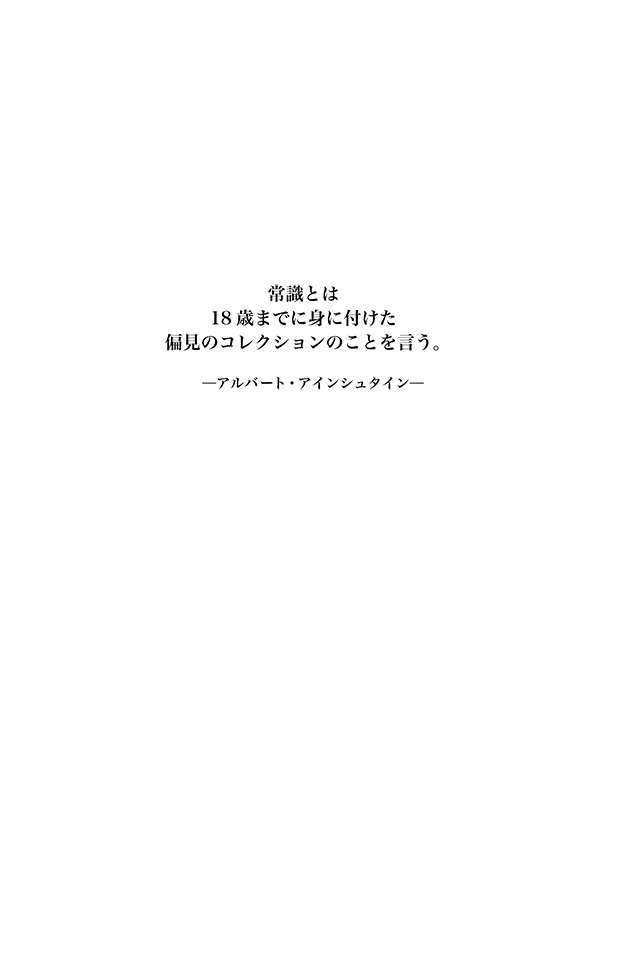
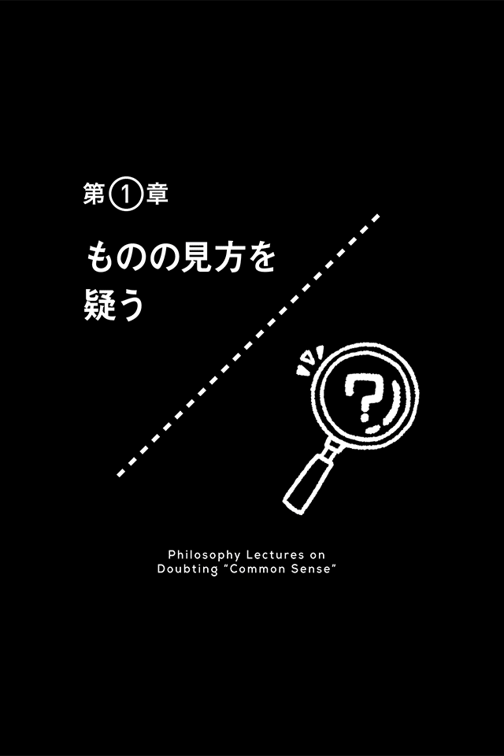
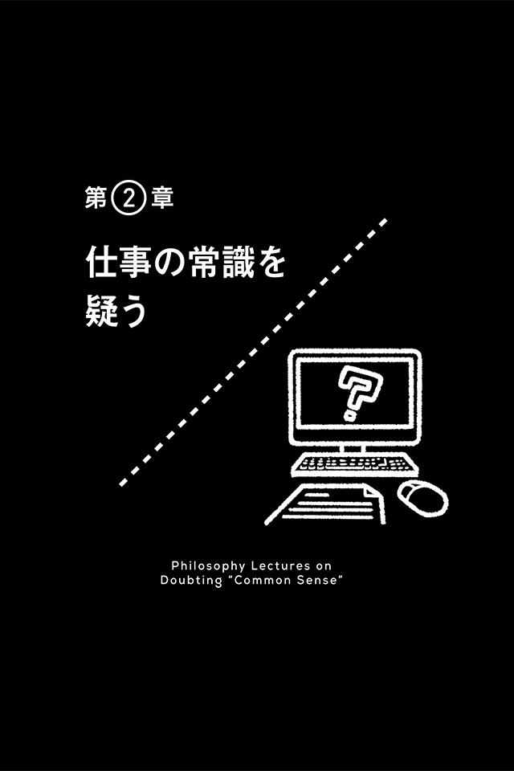
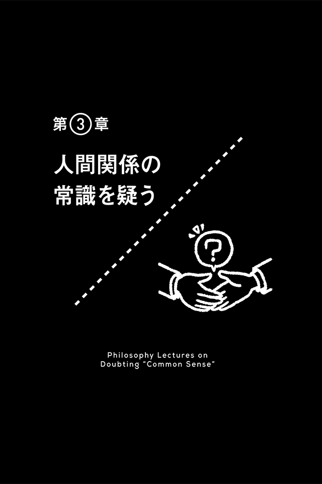
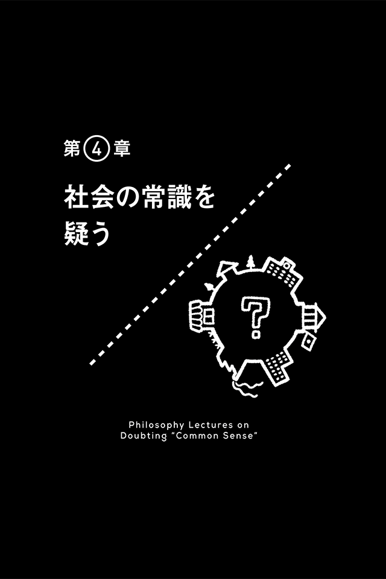
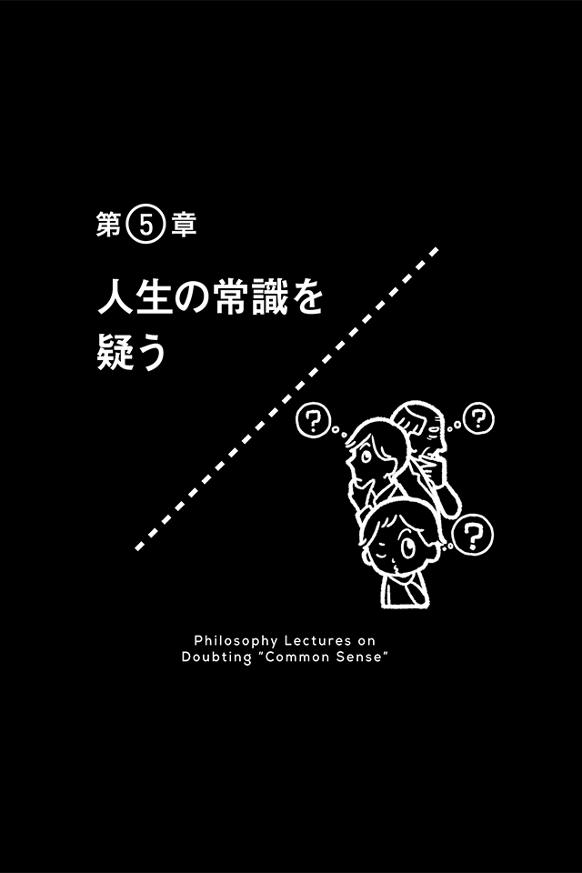
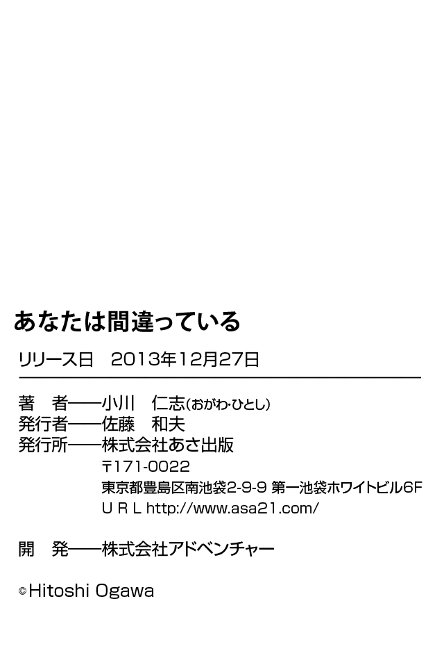

| あなたは間違っている(あさ出版電子書籍) | |
| 小川仁志 | |
| (2012) | |

はじめに
人は「常識」と呼ばれるものを無条件に信じてしまいがちです。「どうして？」「だって、そんなの常識じゃん！」というように、「常識」であるということは、それだけで絶対不動の根拠であるかのように思われています。
でも、どうしてそれが正しいと言い切れるのでしょうか？
その昔、「天動説」という考え方がありました。
人々は、太陽が地球のまわりを回っていると信じていたのです。そして、それは誰もが疑う余地のない「常識」でした。
ところが今、この考え方を正しいと信じている人は誰もいません。地球が太陽のまわりを回っていることが観察され、間違った「常識」が覆されたからです。
そもそも「常識」とは、何でしょうか？
それは、多くの人が抱いている共通認識にすぎません。
この共通認識は、時代や状況、場所によって変化します。
よく、外国に行くと、自分の国では考えられないような食習慣や商習慣に驚くことがありますが、それはそれぞれの共同体では、まったく別の「常識」が存在しているということなのです。そう考えると、何が正しくて何が間違っているのか、よくわからなくなってきませんか？
結局、この世には絶対正しいことなどないのです。
先に述べたように、「常識」は疑おうと思えばいくらでも疑えますから、その意味で、世界は永遠に謎に包まれているのです。
では、身近な常識を疑うことには何の意味もないのでしょうか？
そんなことはありません。
そもそも誤った常識を信じることは、もっともらしい言説にダマされ続けることになります。それでは、損をしてしまう可能性があります。
それが一時的な「損」という程度で済めばいいのですが、間違った常識に縛られたまま、人生を終えることにもなりかねません。
本書では、哲学の視点から大いに「常識」を疑いました。
哲学は疑うことから始めて、真理に到達する営みです。そうしてみんなが信じている嘘を暴いていく行為です。
みんなが信じているなら、それでいいじゃないかと言う人もいるかもしれません。
でも、その信じていることが間違っているかもしれないというのなら、みんなが損をするということだってあり得ます。
そのとき、自分だけが常識を疑い、別の真理を求める努力をしていれば、反対に自分だけが得をするのです。
そんないやらしいことはしたくないというなら、教えてあげてもいいじゃないですか。「みんな、それは間違ってるよ！」と。
真理を明らかにしたからといって、まさか天動説に異を唱え、地動説を主張したガリレオ・ガリレイのように、裁判にかけられることはないでしょう。
場合によってはまわりから非難されるかもしれませんが、そんなことを気にしていては、おかしいことが世の中に蔓 延 するばかりです。
ガリレオは、表面上は裁判の判決に従いながらも、こっそりこうつぶやいたそうです。
「それでも地球は回る」と。
だから、私もこっそりつぶやきたいと思います。
「あなたは間違っている」と。
本書を通じて、私のこのつぶやきに耳を傾けてくださった方だけが、きっと得をすることでしょう。これだけは絶対に正しい（ ）ことなのです。
）ことなのです。

時間は流れているか？
時間は止められない
「ああ、もうこんな時間！」
皆さんは、１日に何度このセリフを心の中でつぶやいていますか？
私たちは常に時間に追われ、時間がないと嘆いています。
忙しいときほど、「時間を止められたらなあ」と思う人も多いでしょう。
でも、時間を止められるのは小説や映画の世界だけ。現実の世界では、時間はまるで川の水が流れるように淡々と、そして冷酷に過ぎていきます。
ここで、ちょっと考えてみましょう。
「時間が流れる」と言いますが、この考え方は正しいのでしょうか？
「１日は24 時間」というシステムは、神様が決めたわけではありません。それは、人間がつくった概念です。だとすれば、「時間が流れる」という考え方も、人間が勝手に決めた約束事なのではないでしょうか。
１日24 時間は世界共通のルール
時間が一定の速度で流れるのは、「常識」だと思われています。
その証拠に時計を見てください。
時計の針は、一定のリズムで時間を刻み続けています。
これは世界のどこに行っても変わりません。同じ基準に従って、同じ間隔が決められています。だから、世界中のどの国でも、24 時間は同じ24 時間なのです。
なぜ、そうなっているのかと言えば、もちろん、そのほうが都合が良いからです。
「３時に待ち合わせよう」と決めても、ある人の３時と別の人の３時が異なれば、お互いに会うことができません。遊びの約束ならまだしも、ビジネスであれば、大きなトラブルに発展するでしょう。
ただ、時計は、時間というものに便宜的に目盛りを入れているだけにすぎません。
言い換えれば、目盛りがついているから、同じ間隔で時間が過ぎているように思えるのです。つまり、時間が本当に「一定のリズム」で流れているわけではないのです。
時間は積み重ならない
現に、楽しい時間は早く過ぎますよね。反対に、退屈な授業や会議はなかなか終わりません。これはシチュエーションによって、時間が異なる感覚で流れていることを示しています。
サッカーの試合で、日本が１点差で負けたままロスタイムに入ったとしましょう。
このロスタイムが３分だと短く感じます。「３分じゃ、逆転は無理だ」と思うから、ロスタイムが速く過ぎるように感じられてしまう。
でも、１点差で勝っているときは、「このまま終わってくれ！ ３分は長いよ。逆転されたらどうするんだ」と思うはずです。もし、時間が一定のリズムで流れていくものなら、こんなふうに感じるのはおかしいと思うのです。
このことをうまく説明してくれるのが、フランスの哲学者ベルクソンの「純粋持続」という概念です。ベルクソンによると、時間は一定のリズムで流れるものではなく、人間の内面にある、直観的なものだというのです。
「ああ、さっきより暗くなったな」とか、「何だか退屈だな」とか、そういった心の変化を〝時間〟ととらえているのです。
そう考えると、時間は決して一定のリズムを刻む機械的な存在ではなくなります。
私たちは、時間を１＋１＝２のように量としてとらえてしまいがちですが、実は積み重なっているのではなく、１＋１＝Ｘのように、ある瞬間と別の瞬間が心の中でつながって、異質なものに変化しているのかもしれません。
例えば、音楽は１＋１＝２と積み重なるのではなく、新たな音が加わることで全体が変化していきますよね。時間もそれと同じだと考えられるのです。
このようにとらえ直すと、時間は単純に流れるものではなくなります。
にもかかわらず、私たちは自分で設定した「目盛り」に、どれだけ振り回されていることか......。
人が時間をつくったのなら、止めることもできるはず。
さあ、時間を止めて、人間らしさを取り戻しましょう！
【結論】 時間は流れない。それは人の心の中にあるだけ。
数字は信頼できるか？
「70 ％」という数字の信頼性
私たちは物事を数字で提示されると、それがあたかも絶対的なもののように感じてしまいます。
例えば「アメリカ人の多くがキリスト教徒です」という表現と、「アメリカ人の70 ％がキリスト教徒です」という表現があれば、後者のほうが信 憑 性 が高いと感じますよね。あるいは「山ほどのがれき」と言われてもどれだけの量なのかよくわかりませんが、「１トンのがれき」と言われれば、頭の中に映像が浮かんできます。
このように、数字には話に具体性を持たせる効果があり、結果として強い説得力が生まれます。
でも、数字は本当にそんなに信頼できるものなのでしょうか？
そもそも70 ％とは誰が数えたのか？ そして、どうやって数えたのか？
もしかしたら、自分のまわりにいる10 人に聞いたところ、たまたま７人がキリスト教徒だっただけかもしれません。
もっとうがった見方をすると、70 ％程度であってほしいと思った人が、都合良く数字を合わせたり、捏 造 したりしたのかもしれません。
そう考えると、「多く」という言葉と「70 ％」という言葉は、本質的に異なるのかどうか、疑問が生まれます。「70 ％」という数字も、「多く」という言葉同様、極めて怪しいものに思えてきます。
数字もひとつの意見である
結局、数字というものは、ある人があるケースにおいて確認できた「数」にすぎないのではないでしょうか。
冒頭の例で言えば、キリスト教徒だと嘘をついている人がいるかもしれないし、逆にキリスト教徒であることを隠している人もいるかもしれない。
真実は誰にもわかりません。だとすれば、数字自体が無意味なものになります。
つまり、数字もまた、ひとつの「意見」にすぎないのです。
数字そのものは客観的であるとはいえ、用いる側はそれを自由に加工することができるのですから、無条件に信じるわけにはいきません。
誰しも相手を説得するためには、あいまいな言葉よりも、もっともらしい数字を使いたいでしょう。その意味で、数字は客観的なものである反面、実は主観的なものなのです。
この点、アメリカの哲学者ローティは、「科学も文学と同じだ」と言っています。
私たちは、数字を扱う科学は文学とは異なる確固たるもので、誰も疑う余地のない真理であるかのようにとらえがちです。しかし、それとても、実は主観に満ちたもので、文学と同根である。
ローティは、そう主張したのでした。
何と大胆で、言い得て妙な表現なのでしょう。
数字のワナにハマらないために
世の中を見渡してみると、数字の誘惑やトリックだらけです。私たちはついついそれにダマされてしまいます。
例えば、よく見かける「２９８０円」という価格表示。これは、３０００円だと高いような気がして買わないのに、たった20 円安くしただけで安いと感じてしまう心理に基づいた販売手法です。
あるいはテレビの通販番組で「通常１万円のところ、３３００円の３回払いです」と言われると、何となく得をした気分になって買ってしまいます。
ところが、実際は１００円しか違わないわけです（それどころか、分割払いの手数料が加わって高くなることもある！）。
数字を言葉と同じものとしてとらえ、その絶対性を疑えるようになると、こうした数字のマジックにダマされることはなくなります。目の前に数字が提示されたときは、その数字を、「意味」から切り離して考えてみることでしょう。
例えば、値段（料金）の場合は、数字をいったん脇に置いて、商品自体の価値やサービスそのものの意味を、じっくりと考えてみることです。
そうすると、支払う対価が妥当なのか、あるいは、それだけの価値がないのか、ということが見えてくるでしょう。
大事なのは、数字を見たときに、その意味をきちんと自分の頭で考えること。
そして、安易に数字の前にひれ伏さないことです。
【結論】 数字は言葉と同じ。絶対正しいとは限らない。
「子どもにはわからない」は本当か？
本当は子どもだってわかっている？
私は子どもの頃、早く大人になりたくて仕方ありませんでした。大人の会話に加わって何か発言しても、「子どもにはわからないよ」と軽くあしらわれてきたからです。
自分ではわかっているつもりで、それなりに意見もあったのですが、大人から見れば、子どもに意見などあるわけがない、あっても間違っているに違いない、ということだったのでしょう。
確かに今なら、内容によっては子どもの頃と違う意見を持ったかもしれません。
でも、だからといって、当時「わかっていなかった」わけではないと思うのです。
「わかる」とか「わからない」という基準は、一体どこにあるのでしょうか？
そもそも、子どもには本当に物事がわからないのでしょうか？
子どもは先入観に毒されていない存在
前提として言えるのは、子どもには知識や経験が不足しているということです。
生きた年数が大人と比べて短いのですから、それは当然のことです。
だから、わからないことも多いだろうし、未熟な判断しかできないだろうと高をくくってしまうのも仕方ないでしょう。しかし、実はその認識が間違っているのです。
そもそも、子どもという存在に対する認識が間違っています。
子どもとは、知識や経験の不足する存在ではなく、むしろ、余計な先入観に毒されていない人間のことです。
イギリス経験論の祖フランシス・ベーコンは、イドラ（先入観）がないほうが物事の本質に近づけると主張しましたが、その意味では、子どものように純粋なほうが物事の本質をとらえやすいのです。
ベーコンは正しくものを見るために、次の４つのイドラを取り除かなければならないと主張しました。
ひとつ目は「種族のイドラ」です。これは人間という種族に固有のイドラで、感情や感覚によって知性が惑わされることによって生じます。
２つ目は「洞窟のイドラ」です。これはあたかも狭い洞窟に考えが入り込んでしまったかのように、教育や読書など個人的体験によって生じる思い込みです。
３つ目は「市場のイドラ」。これは言語によって生じる思い込みのことで、市場で聞いた噂話を信じてしまうようなものです。
そして、最後の「劇場のイドラ」は、劇場で観たものに強い影響を受けてしまうような思い込みのことです。
ベーコンによれば、大人はこの４つのイドラに毒されており、ものが正しく見えていないと言います。
その点、子どもは純粋な分だけ、イドラに毒されていません。
したがって、子どもが大人よりも劣るとは一概には言えないのです。
子どもは、単に大人とは視点が異なる存在だととらえるべきではないでしょうか。
ちょうど、外国人のようなものかもしれません。
外国人が持っている、日本に関する知識は非常に乏しいものです。ならば、彼らの話は聞く価値がないかと言えば、そんなことはありませんよね。
彼らは、我々とは違う経験や常識を有していて、その点では十分傾聴に値します。
その独自の視点から発せられる疑問や指摘には、時々ハッとさせられることがありますが、同じように子どもの発言にも無視できないものがあるのです。
もっと子どもに聞こう
だから私は、子どもを排除するのではなく、むしろ「子どもに聞け」と言いたいのです。
商品開発やサービスの改善案など、ビジネスの世界では、女性の意見を取り入れることが当たり前になっています。同じように、これからは必ず子どもの声を反映させるべきでしょう。
荒唐無稽だと思いますか？ しかし、子どもは紛れもなく社会の当事者なのです。
日本が批准している「子どもの権利条約（児童の権利に関する条約）」では、その柱のひとつに「参加する権利」を掲げています。つまり、子どもは自分たちに関係のある事柄に関して、積極的に参加する権利を有しているのです。
そうである以上、あらゆる事柄に対して、子どもにも意見を表明する権利があると言えるのではないでしょうか。その声に私たち大人は耳を傾けるべきなのです。
【結論】 子どもは先入観から自由な存在。むしろ子どものほうがわかっている。
昨日の記憶は本当に正しいか？
私たちは記憶に頼って生きている
「昨日の夜、何を食べた？」と聞かれて、とっさに答えられなかったという経験はありませんか？
私にはあります。
ひどいときには、ハンバーグを食べたと思い込んでいたのに、実はそれが一昨日の夕飯だったということも......。
このように記憶というのは非常にあいまいなものですが、それでも私たちは、この記憶に頼って生きています。
しかし、その記憶、あなたはどこまで正しいと言い切れますか？
昨日の記憶なら、絶対に正しいと言い切れるでしょうか？
記憶に残るのは印象的なこと
記憶とは、実は「印象」のことです。
脳に印象的な事柄が刻まれ、それが記憶として残るのです。
「昨日の出来事は印象としては新しいから、正確に覚えているはずだ」
私たちは、そんなふうに考えます。ところが、印象とは〝強度〟の問題であって、正確さや合理性を備えているわけではありません。
例えば、いつもと違う眼鏡をかけた人が、なぜか頭にバラの花を載せていたとしたら、どうでしょう？
バラのインパクトがあまりにも強すぎて、眼鏡が変わっていることに気づかない、あるいは、気づいたとしてもすぐに忘れてしまいますよね。
実際、皆さんがはっきり覚えていることは印象の強いことばかりではないですか？
だから、昨夜どんなにおいしいおかずを食べたとしても、一昨日大好きなハンバーグを食べていれば、ついついハンバーグを食べたのは昨日だと勘違いしてしまうのです。
そして、これはやむを得ないことなのです。
精神分析学の父フロイトは、「思い違い」について面白いことを言っています。
私たちの心は無意識によって支配されており、その無意識によって記憶もゆがめられるというのです。
フロイトによれば、結婚式の前夜、大事なドレスの試着を忘れた女性がいたそうです。
その女性は結婚後、すぐに離婚してしまいました。これは、「結婚なんてしたくない」という無意識の気持ちが、試着はすでに終わっているのだと思い込ませ（記憶をゆがめ）、結果的に、彼女に試着をさせなかったのでした。
これは何も特別な事例ではありません。どんな人でも、「そうであってほしい（ほしくない）」という気持ちが強いと、記憶が塗り替わってしまうのです。
そう考えると、あなたが確かな記憶だと思っていることも、無意識のうちに歪曲されているかもしれません。そして、それは昨日の記憶でさえも例外ではないのです。
記憶を全面的に信頼しない
自分の記憶が書き換えられるというのは、考えただけでも恐ろしい話です。
ただ、記憶の不確実性がわかっていれば、記憶だけに頼りすぎないように心がければいいだけの話でしょう。
例えば、常にメモを取ることも有効です。そのメモを繰り返し確認することで、記憶違いによるミスはなくなります。
複数の人に、事実がどうだったか確認するというのも、ひとつの手です。
若い頃は、記憶に自信があるためか、こういう作業を怠りがちです。しかし、年齢は関係ありません。
記憶が本質的に嘘をつくものである限り、いくつであろうと過信は禁物なのです。
「記憶を絶対正しいと思わない」
これは自分自身を信頼しないということではありません。
むしろ、記憶というものの性質を知った上での賢明な行為なのです。
【結論】 記憶は嘘をつくもの。昨日の記憶が正しいとは限らない。
親子は１００％理解し合えるか？
親しい人をどれだけ理解しているか
皆さんは、親しい人のことを１００％知っていますか？
「もちろん」と答えた方、果たして本当でしょうか？
例えば、家族。一般的に、親子、とくに母と子は強い絆で結ばれていると言われていますが、自分の子（親）を１００％理解することは可能でしょうか？
それが私の疑問です。
確かに相手の行動をよく観察し、できるだけ相手を知ろうと努めれば、相当程度理解することは可能でしょう。でも、それはあくまで〝相当程度〟にとどまると思うのです。その証拠に、問題を起こす子どもの親は、決まって「うちの子に限って......」などと衝撃を受けるのです。
家族、恋人、親友......まわりを見渡してみてください。そしてよく考えてみてください。あなたは、親しい人をどれだけ理解しているか。
反対に、その人たちは、あなたのことをどれだけ理解しているか。
あるいは、あなたは自分自身のことをどれだけ理解しているでしょうか。
相手を理解する手がかりは「言葉」
人は「言葉」で相手を理解しようとします。だからこそ、対話が重視されるのです。
皆さんも、子どもの頃から「どうしたの？ お母さんに話してごらん」とか、「先生に本当のことを言ってみなさい」などと言われてきたのではないでしょうか。
これは相手の気持ちや考えが、「言葉」によって理解できるという前提に基づいています。
警察が行う事情聴取も、雑誌のインタビューも、相手の言葉を「聞く」というスタンスで行われます。言葉を引き出すことが、その人の考えを知るのに最適な方法だとされているからです。
私たちは他人の頭の中を見ることはできませんが、それを言葉にしてもらえば理解できると思っています。つまり、言葉は客観的なものだと考えられているのです。
しかし、言葉は本当に客観的なコミュニケーションツールだと言えるでしょうか。
言葉から受け取るイメージは人それぞれ
そもそも言葉というのは「気持ち」の表現です。だから私たちはお互いを理解し合うために、共通の言葉を習得しているのです。
国語の時間はそのためにあります。
「雪ってどんなものでしょうか？」
「美しいとはどういう意味ですか？」
先生はこんなふうに子どもたちに尋ねながら、言葉の意味を画定していきます。
ところが問題は、人によって言葉のイメージが異なる点です。多分「雪」と聞けば、皆あの白くて冷たい物質を思い浮かべることでしょう。しかし、雪国に降り積もる雪と南国でたまに降る雪とでは、印象が大きく違うはずです。
あるいは「美しい」というのが、きれいなものだとか、調和のとれた状態だとか言われても、何が調和なのかは人の感覚によって異なってくるものです。だからこそ好みの異性のタイプは人それぞれなのです。幸いなことに......。
この点について言語学者のソシュールは、言葉というのはシニフィアンとシニフィエで構成されていると言っています。シニフィアンというのは「表すもの」、つまり音のこと。シニフィエというのは「表されるもの」、つまり内容のことです。
「ユキ」という音に対して、雪国ではあたり一面に降り積もった雪景色が内容として対応しているのに対して、南国では決して積もることのないヒラヒラ舞う雪が内容として対応しています。つまり、言葉の意味は、その人の持つ背景に左右されるわけです。
となると、果たしてそれが客観性を保証できるのかどうか、疑わしくなってきます。
「悲しい」という言葉ひとつとってみても、その人のそれまでの人生における悲しみに関する経験を知らないと、その完全な意味は理解できないのです。
このように、いくら相手に言葉で説明してもらっても、その言葉自体が１００％理解できない以上、人を完璧に理解することなど不可能だということになります。
知っているつもり、わかっているつもりで接しているから、誤解が生じるのです。
大事なのは、「１００％理解することは不可能だ」という前提で相手とコミュニケーションをとることでしょう。１００％理解することはできなくても、その人を限界まで知るために、永遠に対話を続けることは十分可能なのです。
【結論】 人を１００％理解するのは不可能だが、永遠に対話を続けることは可能。
目の前の机は本当に存在するのか？
人は自分の目で確かめなければ信じない
皆さんは幽霊を信じますか？
私は信じません。
なぜか？
理由は単純です。見たことがないからです。
「心霊写真くらいは見たことがあるでしょう？」と言われるかもしれませんが、あれは何かの影かもしれませんよね。その場に居合わせた人が写り込んだ可能性もある。だから、幽霊がいるということの証拠にはなりません。
「百聞は一見に如かず」と言いますが、人は実際に見たものでないと、なかなか信じないものです。
ただ、仮に自分の目で確実に「見た」ものでも、それを信じていいわけではありません。あなたが見たものは偽物か、あるいは存在しないものかもしれません。
「えッ
自分の目で見たものが存在しない？」
驚くでしょうが、それはあり得ることです。
世界は「知覚の束」でできている
今は技術が発達していますから、写真や画像はいくらでも加工することができます。ですから、どんなものでも、見ただけで存在を信じるわけにはいきません。
でも、「自分の目」で見れば、話は別。誰でもそれはそこに「ある」と考えるでしょう。無条件で、その物体の存在を信じることができます。
ところが、私がここで問題にしたいのは、このように目の前に何かが見えているという状況でも、それは本当に信じられるのか、ということです。
イギリスの哲学者デイヴィッド・ヒュームは、こんなことを考えました。
彼は、人間の知というのは、基本的に知覚に起因するというのです。そして、知覚とは「感覚に与えられる印象によって反復される観念」にすぎないと考えました。
つまり、私たちが見ているものは、そのつど自分の目を通して形成されるイメージにすぎず、本当にそこにあるかどうかはわからない。私たちが見ている世界は、ヒュームの言葉を借りれば、「知覚の束」だというわけです。
見ていないときにも世界は存在するか
例えて言うなら、目の前に見えているものは、あなたの目という映写機から出た映像のようなものであって、目を閉じれば消えるし、別のものに目をやれば、その別のものの映像が出てくるという感じでしょうか。
ヒューム自身は、「知覚の束」という概念によって、目で見たものがすべてだと言いたかったのです。逆に言えば、目で見えているもの以外は、本当はどうなっているか（存在しているかどうかも含めて）わからないことになります。
「ダルマさんが転んだ」ではないですが、サッと振り向くと、あったはずの机が消えているかもしれません。「何をバカげたことを......」と突っ込まれそうですが、それが絶対にあり得ないとは、誰にも証明できません。
もしかしたら、あなたは「見たつもり」になっているのかもしれないのです。
いかがですか。それでもまだ、あなたは見たものが絶対あると言い切れますか？
【結論】 自分の目で見たものでも１００％信用できるわけではない。
［コラム］常識をひっくり返した哲学者たち① ソクラテス
本書では常識を疑い、覆すことを主題にしています。
実は歴史上の哲学者たちも、皆、常識を疑うことで名を残した人たちばかりです。そこで、このコラムでは何人かの例をご紹介しましょう。
まずは、哲学の父ソクラテスです。
彼の人生は本当にエピソードに事欠きません（だからこそ、最初の哲学者として歴史に名を残すことになったのかもしれませんが......）。
そもそもソクラテスは、最初から哲学者だったわけではありません。
「裸同然の姿で街をうろつくブ男」
彼を形容するなら、まさにそんな表現がピッタリだったのです。
もっとも、愛国心が強く、腕に自信があったようで、戦争で活躍したという武勇伝が伝えられています。このように、もともと彼は、理性的な哲学の世界とは程遠い人物でした。
では、そんな〝パッとしない男〟が、なぜ哲学の父になり得たのでしょうか。
ターニングポイントは「神のお告げ」にありました。
ある日、ソクラテスの友人カイレポンが、デルポイの神殿で神のお告げを聞きます。それによると、この世で一番の賢者はソクラテスだというのです。友人も驚いたでしょうが、一番驚いたのはソクラテス本人です。
彼はその話を疑いました。
それはそうでしょう。「お前は、この世で一番のブ男だ」と言われたら、おそらく彼もしぶしぶ納得したかもしれませんが、それがよりによって賢者だなんて！
そこで彼がとった行動は、賢者と呼ばれる人たちに聞いて回ることでした。
ソクラテスは、ソフィストと呼ばれる「徳」の教師たちに質問をしました。ところが、意外にも、彼らはソクラテスの質問に対して納得のいく答えを返してくれなかったのです。いや、正確に言えば、納得のいくように答えられなかったのです。
理由は簡単。ソフィストたちは賢いと言われているので、物事を知らないとは言えません。だから知ったかぶりをしてでも、何かを答えようと悪あがきをするのです。そうすると、必ず答えに窮します。
対するソクラテスは、本当に何も知らなかったので、自分は知らないと開き直って質問し続けました。そこで気づいたのが、賢いとされている人間に限って、知ったかぶりをするという事実でした。それなら何も知らないと開き直って、真実を知ろうと質問している自分のほうが、より賢くなるチャンスがあるに違いない。
これがいわゆる「無知の知」と呼ばれる概念です。
こうしてソクラテスは、「無知の知」を武器に質問しまくりました。そして相手との問答を通じて、真実を探求していったのです。これが哲学の始まりです。
普通、人間は「知らないことは恥ずかしい」と考えてしまいがちです。だから、本当は知らないことでも「知っている」と答えてしまう。
でも、実は「〝知らない〟と開き直ることこそが賢い（＝無知をさらけ出したほうが早く真理に到達できる）」ということに、ソクラテスはいち早く気づきました。彼の人生は、常識を覆したことで伝説になったのです。

会議は本当に必要か？
会議の意義を見直してみよう
会議が必要かどうかと問われれば、多くの人が「必要だ」と言うでしょう。
では、会議が好きかと聞かれると、「嫌い」と答える人が多くなります。
なぜ嫌いなのかというと、長い、面白くない、ムダという答えが返ってくるのです。
えっ、ムダ？
会議がムダなら、そもそも必要ないのではないでしょうか。
会議が必要だという人に聞くと、決まって「顔をつき合わせて話し合わなければダメなんだ」と言います。
でも、本当に集まって話し合わないとダメなのでしょうか？
私は対話は好きですが、会議は嫌いなので、どうしても疑ってしまいます。あえて会議で飛び交いそうなおやじギャグ風に言うと、会議に懐疑的なのです......。
会議がなくなっても実は困らない？
会議というのは、洋の東西を問わず昔から行われてきたものです。そう言えば、世界史でも、「○○年△△△会議開催」というように、年号を覚えさせられました。
もっとも、歴史上の会議はとても重要で、例えばニケーア公会議（３２５年）がなかったらキリスト教はバラバラに分裂していたでしょうし、ウィーン会議（１８１４～１８１５年）がなかったら、ナポレオン戦争後のヨーロッパにおける国際秩序は崩壊していたかもしれません。
では、あなたの会社の会議がなくなったら、どうなるでしょうか？
多くの人は、会議がなくなると物事を決められないと思っているようですが、それは、強迫観念に縛られているのでしょう。会議がなくなったところで、日常業務にはほとんど影響がなかったりするのです。
あなたのスケジュール帳にビッシリと書き込まれた、来週の会議の予定、本当に必要ですか？ やりとりをメールで済ませたり、担当者が必要事項を決めて通知したりすれば事足りるのではないですか？
会議はムダの塊？
会議には議題があります。でも、どんな議題であれ、結局は社長のような力のある人の〝鶴のひと声〟で決まることが多いのではないですか。
また、議題によってはあらかじめ資料を用意しておかなければいけませんが、その場合は、資料を作成した人がたいてい何らかの答えを用意しているものです。会議はその確認の場にすぎません。それなら、すべての関係者が集まる必要はないでしょう。
本気で議論をするなら、集まってもいいと思います。それは「対話」であり、「討議」です。私も、お互いの主張を真剣に戦わせる「対話」なら、ぜひやるべきだと考えます。ただ、それらは決定追認型の会議とはまったく別のものでなければいけません。
古代ギリシャの哲学者アリストテレスは、「エイドス」と「ヒュレー」という概念を提起しました。エイドスとは物事のあるべき姿、言わば設計図です。これに対して、ヒュレーはその素材、材料のようなもの。
現実主義者のアリストテレスは、物事の本質や真理は、まさに「目の前」にあるのだと主張しました。つまり、材料であるヒュレーの中に、最初から設計図であるエイドスが内在されているというわけです。例えば、材木やレンガの中には、もともと完成形である家のエイドスが含まれているということです。
会議は、この「エイドス」と「ヒュレー」の関係に似ています。
つまり、会議の議題や日頃の仕事というヒュレーの中には、すでに決定すべき事項であるエイドスが含まれているのです。だから、多くの場合は、わざわざ会議など開かずとも答えが出るのです。
やり方次第で会議はなくせる
時間と労力のムダですから、会議は即座にやめるべきです。
答えがはっきりしているものなどは、誰かが結論を決めてメールで回せばいいのです。これは割り切り次第ですぐにできるようになるでしょう。
もし、その決定事項が不服なら、それもメールで回せばいいのです。
普通は、誰かがひと言答えてあげれば済む程度のものです。全員が集まって、そのやりとりを聞く必要なんてありません。
会議には徹底的に懐疑的になる。やはり、これが鉄則のようです。
【結論】 会議は不要。日常業務の延長で対応できる。
会社の方針には従わなければならないか？
会社のブログ禁止令に従えるか
もし、上司に「君はブログで会社のことを批判しているようだね。すぐに削除しなさい」と言われたら、どうしますか？ 「自分の会社だからこそ、より良い組織にしたい」という一心で書いたのに、批判自体が会社の方針に反しているというのです。
この場合、常識的には次のように考えられます。
まず業務に関することなら、その会社の方針に納得して入社しているわけですから、自分だけ組織の意向に反する行動をとることはルール違反である。だから、会社を批判することは許されない。これは、言わば組織人としての宿命です。
次に、プライベートな活動についても、その組織に属している以上、24 時間３６５日、組織の一員であることには変わりません。だから、たとえ休日であっても、組織の信用失墜につながるような活動は許されない。
これが会社側の論理でしょう。
会社には、全体をひとつにまとめるための方針があります。そして、所属する人たちは、その方針に従って活動することが求められます。そうでないと、組織をまとめることができないからです。
しかし、だからといって、何でもかんでも組織の言いなりにならなければいけないのかというと、それもまた違うのではないでしょうか。
多様な意見があってこその組織
私たちは組織人である以前に、１人ひとりが人格や個性を持った個人です。その個人として表現や行動の自由が制限されるというのは、いかがなものでしょうか。
組織に属すということは、必ずしも「組織の犬」になることを意味しているわけではありません。全体主義国家ではないのですから、どんな組織であっても、表現の自由はあるはずです。
また、おかしいと思うことについて、それに反する行動をとったからといって、解雇されたり、重い処分が下されたりするのは、ちょっといきすぎだと思うのです。
組織というのは個性豊かな人の集まりだからこそ、さまざまな意見が出るのです。
それが組織の方針に合わないからダメだといって抑えつけるのではなく、多様な意見を生かすという視点もまた、同じくらい重要なのです。
自分の人生の中に会社を位置づける
構造主義という思想があります。文化人類学者のレヴィ＝ストロースなどが唱えた思想で、物事は構造全体で見ることで、初めてしくみや本質が見えてくるとする考え方です。
彼は、一見、非文明的ともとれるアフリカ先住民の行為を、社会や文化全体の構造の中に位置づけることで、それらが逆に西洋よりも進んでいることを発見しました。
一部だけを見ていてはわからない物事の本質が、全体のしくみを知ることで浮かび上がってくるのです。
この構造主義の視点で眺めてみると、会社というものの本質が見えてきます。
会社は「君の将来のためだから......」とか「社員を大切に考えているからこそ......」などと言いますが、そんな表面的な言葉にダマされてはいけません。
会社という組織の全体構造を見れば、それは嘘だとわかります。会社にとっては、全体として利益を出し、組織を存続させていくことが最優先事項ですから、本当は１人ひとりの個性ややりがいなどは二の次なのです。だからこそ、人員削減などという卑劣なことも平気で行えるのでしょう。
会社が組織の存続のことしか考えていない事実に気づけば、私たちの働き方も変わってくるはずです。会社の方針の中に自分の人生が位置付けられてしまうのではなく、逆に自分の人生の中に会社を位置付けてやるのです。
具体的には、会社を利用するということになるでしょう。私たちにとって、会社はあくまで生きるための手段であって、目的ではないはずです。
だから何もかも従う必要などありません。自分の信念を通すべきときは通す。戦うべきときは徹底的に戦えばいいのです。
理想はウィン＝ウィンの関係です。それがどうしても難しいようなら、やはり自分がウィンすることを考えるべきです。
人生の主役は会社ではなく、あなた自身なのですから。
【結論】 会社の方針は絶対ではない。自分が勝つことを常に考えるべき。
残業は良くないことなのか？
残業は仕事ができない証拠？
最近、残業せずに家に帰ろうという風潮が高まっています。
しかし、20 年前、私が商社に入った頃は、まだ残業する人が尊敬され、仕事の鬼のように思われていました。逆に定時に帰る奴はやる気がないと言わんばかりの雰囲気だったのです。
ところが、おそらく男女共同参画という積極的理由、経費節減という消極的理由から、今や残業は社会の敵になりつつあります。残業するのは仕事ができない証拠だとか、ムダなことをしていると非難されるのです。
私自身は、これまでの社会人生活を振り返ってみて、残業時だからこそ得られたものもたくさんあります。
例えば、日頃話す機会がなかった先輩とゆっくり話せたり、昼間バタバタと忙しくしていたことで気づかなかった仕事上の発見があったり......。
これらは、残業をしていなければ得られなかった貴重な経験です。
「残業＝悪いこと」とバッサリ切り捨てる必要もないと思うのですが......。
ムダなものにこそ価値がある
フランスの思想家セールは、「ノイズ」という概念について論じています。
ノイズというのは、通常はムダなものだと思われているものです。でも、そんなノイズにこそ、新しい情報が紛れ込んでいるものです。
女子高生のたあいもない会話から、彼女らのニーズを探り出すというバズマーケティングという手法もあるくらいです。その意味で、ノイズは情報の宝庫なのです。
この発想は、ムダだと思われているものを見直すことによって、初めて可能になるものでしょう。「残業は悪だ」と全否定してしまっては、せっかくの宝を見逃すことになってしまいます。
大切なのは、一律に何かを悪と決めつけて排除してしまう姿勢を改めることです。「残業は良くない」ではなくて、残業を含めた多様な働き方を許容すべきなのです。
問われるのは成果
だからといって、深夜や土日まで仕事をすればいい、というわけではありません。
私が言う「多様な働き方」とは、オーバーワークが当たり前で、残業する人が無条件に尊敬されるような時代の働き方とは１８０度異なる発想です。
これからの時代、問われるのは「成果」です。
「仕事」について考えるとき、私たちはどうしてもそこにかけた時間を重視しがちですが、本来それは二次的なものであって、本当に大事なのは中身のはず。
ですから、仮に毎日３時間の残業をしていて、まわりから効率が悪いとバカにされても、そのスタイルで一定の成果を上げることができるなら、それはそれでいいのではないでしょうか。９時から５時まで真面目に仕事をすれば、成果が上がるというものでもないでしょう。
改めて残業の意義に着目することは、私たちの働き方、日本社会全体の労働観すべてを覆す大きなきっかけになるような気がします。
皆さん、もう一度、「残業＝悪」の考えを見直してみましょう。
【結論】 残業は悪ではない。大事なのは最終的な成果。
クレームはすぐに解決すべきか？
クレームに過敏すぎる日本社会
クレーマーだとかモンスターペアレントなどという言葉がよく聞かれますが、どうも日本人はクレームに過敏すぎるような気がしてなりません。
何か言われると、必要以上に萎縮して、平謝りしてしまうのです。よく言えば、サービス精神やおもてなしの心にあふれているとも考えられますが、悪く言えば、非難されることに慣れていないということもできるでしょう。
確かに、ビジネスにおいては、クレームを軽々しく扱うことは危険です。
とくに接客業やサービス業など、顧客と直に接する仕事では、できるだけスピーディーに対応することがマニュアルに盛り込まれているほどです。
今はネットを通じて口コミが瞬く間に広がる時代ですから、一度お客さんとの関係が悪化すれば、その結果がひとり歩きして、会社にとって致命傷になりかねません。
だとすれば、やはり、クレームは早めに解決しなければならないのでしょうか。
「放置」という最善策
私は、クレームは基本的に放置しておけばいいと考えています。
そもそもクレームなどというものは主観であって、必ずしも正当な意見ばかりではありません。クレーマーと呼ばれる人たちにいたっては、文句を言うことが習慣となっており、もはや理屈さえ通っていない人もいるのです。にもかかわらず、いちいちそれに応じるというのは愚の骨頂としか思えません。
この点で参考になるのが、ドイツの哲学者イマヌエル・カントが説いた「アンチノミー」です。
「アンチノミー」とは、二律背反と訳されるように、２つの相反する事柄が同時に両立し得ることを意味しています。
カントは、同じ事態を「現象」と「物自体」という２つの異なる視点からとらえようとしました。現象とは、まさに、目の前で展開している状態を指すのに対し、物自体とは、目には見えない本質のようなものを意味しています。つまり、両者は物事をとらえる次元が異なるのです。
このアンチノミーの発想を念頭に置くならば、クレームとは相反する立場からの意見にすぎないととらえることが可能です。
クレームというと、「苦情」のことだと思われがちですが、英語のクレームには「主張」という意味があります。要するに、一意見だということです。
だから、相手の言うことに過敏に反応し、自分たちのやり方を変える必要などまったくありません。かといって相手を説得する必要もありません。
本当に自分たちが間違っているならいざしらず、クレームを受けたこちら側の主張がそれなりに成り立つのなら、そのままにしておき、何の対応もしないというのが正しい選択なのです。
クレーム係ではなくフレーム係を
クレーム対応というのは、一見前向きに見えますが、実は受動的な作業です。
なぜなら、単に相手から寄せられた苦情に対応しようというだけなのですから。
それは、あたかもマイナスをゼロにする行為に似ています。
大事なのは、クレームを処理する「クレーム係」をつくることではなく、むしろクレームを言う側と言われる側、両方の主張をひとつの枠の中でとらえて整理する「フレーム係」を設けることでしょう。
Ａという主張に対してＢというクレームがあるということは、対象となっている物事が、ＡＢ両方の側面からとらえられる証拠です。だから、このことを改めて認識し、フレーム（枠組み）の再設定を行うのです。
例えば、「甘い」というコンセプトの商品に対して、「酸っぱい」というクレームが来たとしましょう。このとき、安易に訂正したりするのではなく、「この味は酸っぱいととらえることもできるのか」と宣伝や商品開発の参考にするのです。
私の提唱するフレーム係は、マイナスをプラスに転じる発想です。
ちなみに、私のこの意見を鵜呑みにしてクレームを放置した結果、問題が広がってしまったなどというクレームは勘弁してくださいね。
【結論】 クレームは放置していい。
出世しようとするのは良いことか？
非競争主義が停滞をもたらす
日本がまだ高度経済成長期にあった頃は、出世こそが人生の目的であるかのように思われていました。
現に、私が商社に就職した20 年前までは、まだそのような風潮が残っていました。
同期の中で誰が社長になるかという話が、飲み会のたびに話題になったものです。
でも、今やそんなことを言う人は減ってきました。多くの人が、出世だけが人生ではないという価値観を抱き始めたのだと思います。
しかし、では、他にどんな人生があるというのでしょうか？
競争などせず、のんびり行こうとなれば、平和にはなるでしょう。
しかし、平和は同時に弛緩と停滞をもたらします。
出世を目指して切磋琢磨していた時代のほうが、まだ活力があって良かった......。
そんなふうに感じる人もいるかもしれません。
では、出世しようとするのは良いことなのでしょうか、悪いことなのでしょうか？
欲望が有害になる時代
そもそも、なぜかつては皆出世を目指したのかというと、順番に出世できるしくみがあったからです。
ところが、現在のようにポストがないと出世は物理的に不可能です。どれだけ優秀でも、管理職のポストは限られていますから、その席が空かなければどうしようもありません。そこで仕方ないので、待遇は管理職並みでもポストはヒラ、あるいはポストは管理職でも待遇はヒラ同然（なんちゃって管理職）という人たちが出てきます。
これは、経済が縮小するときには不可避の事態です。
そんな上の世代の姿を見た若手社員が、「出世を目指しても虚しいだけだな」と感じるのは無理もないでしょう。
また、かつては社会全体が上を目指す価値観で統一されていました。
しかし、現代日本のような成熟社会では、「発展」にはあまり価値を見出しません。逆に、発展や競争を掲げるのは良くないこととされるのです。
そんなにガツガツせずに、もっとみんな仲良くやっていこうよというわけです。
パイが小さくなると、取り合っても仕方ないという話になるのでしょう。
そのような時代には、欲望はむしろ〝有害〟になるのです。
私たちの意志が世界をつくる
ドイツの哲学者ショーペンハウアーは、意志が表象となって現れるのが世界だと言っています。つまり、この世界は私たちの「意志」が生み出しているというのです。
確かに、戦後は、人々の「社会を発展させたい（＝豊かになりたい）」という強い意志が著しい経済成長をもたらし、今の日本をつくってきました。
でも、問題はその意志には際限がないことです。
人間の欲望はとどまるところを知りません。では、その欲望だらけの状態から逃れるためにはどうすればいいのか？
ショーペンハウアーの答えは、こうでした。
「意志を否定すること」
禁欲的に意志を否定することで、私たちは初めて苦悩から解放されるというのです。
そう考えると、出世欲を否定することで、ようやく私たちは苦悩から解放されたと言えるのかもしれません。
とはいえ、仕事をいい加減にやりながらブラブラ過ごせばいいという話にはなりません。それでは社会はまた別の苦悩を抱えることになるでしょう。
出世は目指さずとも、生き生きとした人生を送り、活力ある社会をつくり出す。
今求められているのは、そのような態度です。
例えばそれは、出世を意識せずに仕事上で自己実現を目指す、あるいは、地域の活動など会社とは別のフィールドで力を発揮する、といったことではないでしょうか。
出世競争は、あくまでも会社という枠の中で行われるレースにすぎません。その古くて狭い枠組みにとらわれていては、新しい時代に対応できないでしょう。
視点を移して、社内のポスト争いとは違う場所で、自分自身を生かすことです。
そのほうが、出世のために人を蹴落とすことばかり考える毎日より、よほど充実していると思いませんか？
【結論】 現代において出世は苦悩を生む種。別の分野で自己実現を図るべき。
仕事をしない人生はダメなのか？
大富豪になっても働くか？
「仕事をしないのはいけないことですか？」と聞かれたら、どう答えますか？
常識的に考えれば、仕事をしなければお金が入ってきませんから、この問いに答えるなら、「いけなくはないが、仕事をしないで生きていくのはおそらく無理だから、結局、働かなくてはいけないだろう」という答えを返すことになるでしょう。
では、仮に、アラブの石油王のように働かなくてもお金が入ってくる身分だったとしたら、どうでしょうか？ それなら、働くことなどスッパリやめますか？
この前提があまりにも極端だとしたら、他の人が働いているとき、自分だけが働かないのはいけないことでしょうか......？
実際、「働かない」というのは、勇気のいる選択肢です。
何となく後ろめたい気持ちになりますし、人からも責められるかもしれません。
でも、それはおそらく、「人間たるもの、働くのが当然だ」という考え方が世の中で支配的だからでしょう。
ところが今、そんな風潮に変化が訪れています。働かないことに対して、以前ほど厳しい視線が送られなくなりました。なぜでしょう？
そこには、少なくとも３つの理由があるように思われます。
まずは、ニートや引きこもり、生活保護の不正受給者のように、働かずに生きている人たちが現実に存在すること。２つ目は、「失われた20 年」とも言われる長い不況で、働きたくても仕事がない人が増えていること。
最後は、社会が成熟し、価値観が多様化したことで、「働くことだけが人生ではない」という発想が出始めていることです。
３つ目が積極的な理由であるのに対して、残りの２つは消極的な理由ですが、それでもその消極的な理由があるからこそ、価値観の多様化が起きているのは確かです。
仕事がすべてという洗脳
「働くことだけが人生ではない」
価値観が多様化する中で、このような発想が出てきたこと自体は、望ましいことではないでしょうか。
これまでの日本社会では、「社畜」「過労死」という言葉が生まれるくらい、多くのビジネスマンが仕事を優先してきました。もちろん、戦後の日本の復興と経済成長を支えてきたのは、そんな日本人の勤勉な態度であったことは間違いありません。
でも、私たちは、いつの間にか手段を目的化し、経済的に十分豊かになった今もなお、勤勉に働くことだけがすべてであるかのように思い込んでいたのです。
しかし、それはどう考えても間違っています。人生にはもっとたくさんの選択肢があるはずです。真の豊かさとは、経済的な豊かさではなく、心の豊かさのはずです。
それを見えなくしている「仕事＝人生」というマインドコントロールから、早く逃れなければいけません。
人間に必要なのは「遊び」
かつて、オランダの歴史家ホイジンガは、人間の本質を「ホモ・ルーデンス（遊ぶ人）」であると言いました。
本来、人間は、決して「働く人」ではなかったのです。確かに人間は、道具を使って狩りをし、農耕や牧畜を始め、ものをつくるまでになりましたが、それは必ずしも「働いた結果」ではありません。むしろ「遊んだ結果」だったとも考えられるのです。
もちろんここで言う〝遊び〟とは、暇つぶしのように、ただ無為に時間を過ごすことを指すわけではありません。あくまでも、人間が楽しんで行う営みのことです。
何事においても、人間は楽しんで没頭するときに、最大の効果を上げます。そして、その効果に〝対価〟を与える人が出てきます。
それは、ときにはお金だったり、ときには名誉だったりしますが、いずれにせよ、楽しみながら取り組んだ営みが、そのまま「仕事」になるのです。
そう考えると、人間は必ずしも仕事をする必要などないのではないでしょうか。
もちろん、生活していくために最低限のお金はいりますが、必要以上にお金を稼ぐ必要はありません。本当に必要なのは、心から楽しめることに打ち込むことなのです。
【結論】 仕事は無理にしなくてもいい。没頭できる「遊び」を見つけること。
会社に行くのは当たり前か？
長時間通勤はムダな時間？
「会社に行くのは当たり前か？」などとストレートに聞かれると、それは当たり前だろうと答えてしまいますよね。
私たちは、どこかで社会人は会社で仕事をするものだと考えがちですし、一般的にもそれが当たり前だと思われているところがあります。
だから、在宅で仕事をしていても、「あの人、何？ 昼間から家でブラブラして......」などと後ろ指を指されてしまうのです。
ここで、改めて私たちと会社との関係を見直してみたいと思います。
会社に行くためには、当然ですが、「通勤」をしなければいけません。
でも、この通勤、ムダな時間の最たるものだと思いませんか？
大都市圏では、会社と家の往復で３時間かかるというケースもあります。
私もかつて、長い時間をかけて通勤していたことがあるので、どれだけ苦痛かはよくわかります。満員の通勤電車の中では何もできません。ただ、疲れるだけです。
私たちは、そうまでして会社に行かなければならないのでしょうか？
会社にいなくても仕事はできる
会社に行かなければならない理由として、「仕事がチームワークだから」というものがあります。
会社とは、経営者をトップに据えた「ピラミッド型」の組織であり、チームリーダーや先輩、後輩、同僚たちと協力しながら仕事をしなければいけません。
だとすれば、やはり組織内の人たちとコミュニケーションをとるために、毎日会社に行かなければならないだろうというわけです。
しかし、これはどうしても出社しなければならない理由にはならないでしょう。
なぜなら、ネットやメールなどの通信手段を駆使すれば、離れた場所にいても、社内（社外）の人と十分コミュニケーションをとることが可能だからです。こうしたコミュニケーションツールを使えば、極端な話、地球の裏側とでも仕事ができます。
かつて、自宅をオフィスにするＳＯＨＯというスタイルが流行ったことがありますが、最近では、「ノマド」というワーキングスタイルが出てきました。
ノマドとは、もともとは季節ごとに居住地を移して生活する遊牧民のことを意味する言葉でした。そこから転じて、最近では、カフェや自宅などを転々としながら、オフィス以外の場所で働く人たちのことを指すようです。
既成概念にとらわれない彼らの働き方は、もしかしたら、世の中の働き方を大きく変えるかもしれません。
会社に縛られない社会をつくろう
会社に常駐する必然性がなくなれば、私たちの働き方だけでなく、社会のしくみや制度そのものが変わってくるのではないでしょうか。
例えば、子育てのあり方も今とは違ったものになるでしょう。
これまで、母親が専業主婦の場合は、「父親は仕事、母親は家事・育児」という役割分担になっていましたが、父親も家で子どもといるのが当たり前だということになります。
地域活動への関わり方も変わります。
自宅で仕事をすることが当たり前になれば、「普段、自分は地域と関わっていないから関係ない」という態度はとれなくなるでしょう。地域の環境問題は、「職場環境」の問題になりますから、無視することはできません。したがって、地域活動に参加するのが当たり前になるのです。
このように考えると、会社に縛られないしくみをつくることは、社会の活性化につながるように思えてなりません。
会社に行かないとコミュニケーションが不足するのではないかと危惧する人がいますが、心配無用です。なぜなら、確かに社内コミュニケーションは減るかもしれませんが、その分、地域の人々や家族とのコミュニケーションが増えるからです。
だとすれば、良いことばかりだと思いませんか？
【結論】 会社に行くのは当たり前ではない。行かないことで社会が活性化する。
［コラム］常識をひっくり返した哲学者たち② デカルト
中世から近代への転換期となったルネッサンス。それは科学の飛躍的な進歩をもたらすと同時に、当時の人々の精神面を根幹から揺るがす事態をも招きました。
それまでヨーロッパで支配的だった「神」は、絶対的に信じられる存在でした。
一方、科学は疑おうと思えばいくらでも疑える存在です。そこで、科学の「根拠」の喪失が問題となったのでした。
それまでの「神」のように、絶対に疑うことのできない不動の一点がない限り、科学というものが、あたかも根なし草のごとく頼りないものに見えてきたのです。
この由々しき事態を前に果敢に立ち上がったのが、フランスの哲学者であるルネ・デカルトでした。
デカルトは、近代哲学の鼻祖と呼ばれる人物です。
彼は、絶対に疑うことのできないものを発見するために、試行錯誤しました。
デカルトがとった方法は、何と部屋にこもってあらゆるものを徹底的に疑うというものでした。何もかもが疑わしいときに、確たるものを見つける方法が、さらに疑うことだったなんて！ こんな逆説的な話はありません。
でも、よく考えてみれば、これは決して不合理な話ではありません。
何もかもが疑わしくても、だからといって本当にすべての物事が疑えるとは限らないからです。世の中には無数に物事が存在します。だから片っ端から疑っていけば、もしかしたら疑い得ない何かが見つかるかもしれないのです。デカルトは、その道を選びました。
急がば回れです。
この部屋は本当に存在するのだろうか、目の前にある机は本当に存在するのだろうか、いや、そもそも私自身が本当に存在しているのだろうか......。
デカルトは、ほとんど病的なまでにあらゆることを疑い続けました。
そして、ついに彼は、絶対に疑えないものを発見したのです。
デカルトが疑えなかったものとは何か？
それは、自分自身でした。より正確に言うなら、自分自身の意識です。
デカルトによると、いくら「私は存在しないかもしれない」と疑っても、現に疑っている自分はそこにいる。そこから彼は、自分の意識だけは決して疑うことができないという結論を得たのでした。この自分の意識こそが、彼が探し求めていた確固たるものだったのです。
デカルトは、このことを「我思う、ゆえに我あり」と表現しました。私は自分を疑う（考える）ことができるから、確かにここに存在している......という意味です。
こうしてデカルトは、人間の意識を特権的な位置にまで高めました。と同時に、本来は意識と同じくらい大切であるはずの体は、ものと同じく疑わしい存在に貶 められてしまったのです。デカルトにはもう一息、大胆な発想でこの問題を乗り越えてほしかったのですが、それは後の哲学者たちに託されました。
しかし、心と体の関係は、いまだにうまく説明されたとは言えません。
本書を読んで常識を打ち破ることを学んだ皆さんは、ぜひトライしてみてください。

男女の間に本当の愛はあるのか？
ドロドロした関係は愛と呼べるか
男女の間の愛ほどややこしいものはありません。
世の中には、愛のために自分の夢をあきらめて、相手にすべてを賭けるような人もいるくらいです。それほど恋愛には、人の冷静さを失わせる力があるのです。
しかし、そもそも男女の間に、本当の愛などというものが存在するのでしょうか？
常識的には男女は愛し合うものであるとされています。初恋に始まり、老いらくの恋に至るまで、とにかく男女は愛し続けるものだと思われています。
考えてみれば、人間は生まれた瞬間、いや、生まれる前から愛に包まれて存在し、愛の中で育っていきます。だから自分も誰かを愛するようになりますし、また愛を求め続けるのでしょう。そう考えると、男女間に愛が存在するのも十分うなずけます。
では、なぜ、そのように愛する人を憎んだりするのでしょうか？
極端な例では、愛する人にひどい罵声を浴びせたり（モラル・ハラスメント）、交際相手に暴力をふるったりする（デートＤＶ）ケースもあるようです。
もともとあったはずの愛が違うものに変化するのか、なくなってしまうのか......。
愛がなくなったのならスッパリと別れればいいのに、なぜドロドロとした関係になってしまうのか。簡単に別れないのは、まだ何らかの形で愛が残っているのでしょう。
それが原因でゆがんだコミュニケーションが生まれているとしか思えません。だとすれば、それでもまだ、その状態を「愛」と呼んでいいのでしょうか？
プラトンが説いた究極の愛の形
では、愛がどのように移り変わるのか、その過程を見てみましょう。
たとえ正式に付き合う前であっても、片思いであれば、そこには愛があります。
恋愛が成就して、男女が仲良く付き合っている間は、やはり愛があります。
問題は、どの時点で愛がなくなるか（変質するか）、です。これは、愛の本質をどうとらえるかによって変わってくるでしょう。
例えば、愛とは相手を思いやっている状態だとすれば、激しいケンカをし始めるともうダメですね。いったん暴力をふるってしまえば、憎しみが上回っていますから、その時点で愛がなくなったという見方ができます。
そう考えると、理想的な恋愛とは、お互いに思い合っている状態なのでしょうか。
しかし、恋愛の本質は、実は相思相愛状態ではないのです。
古代ギリシャの哲学者プラトンは、恋愛の真理を説明するのにエロースという言葉を使っています。エロースとは「互いに求め合う愛」という意味です。
プラトンの思想の特徴は〝理想〟を追い求める点にありますから、愛も、当然「追い求める」ものになります。これは、言わば純愛でしょう（だから純愛のことを「プラトニックラブ＝プラトンの愛」と言う）。
ただ、相手を追い求めるということは、極端に言えば、相手の気持ちはどうでもいいのです。自分が追い求めることに意味があるのですから。
確かに恋愛をしているときは、自分のことばかり考えて、まわりが見えないものです。でも、お互いのベクトルが向き合っているとき、つまりお互いに求め合っているときは、それでもうまくいくのです。
問題は、お互いのベクトルがズレ始めたとき、あるいは、どちらかが追い求める気をなくしたときでしょう。そのときは、片方がもう一方を執拗に追い求めて、相手はそれから逃げるという形になります。これはもう、ストーカーですよね。
愛の本質が一方的に追い求める点にあるなら、付き合う前から一方が相手への関心を失うまで、愛の本質は終始一貫して変わらないと言えるのではないでしょうか。
相手の心変わりは自分のせい
男女間の愛が、一方的に相手を追い求めるものだとわかると、付き合い方も変わってくるでしょう。まず相手に過剰に期待することがなくなります。
自分が魅力的である限り、相手はずっと追い求めてくれるし、そうでなくなれば追い求めてはこなくなる。ただ、それだけのことなのです。
それを「なぜ愛してくれないの？」と問い詰めても仕方ないでしょう。
悪いのは相手ではなく、自分なのですから。そして、そうした愛の本質に自覚的になることで、いつまでも魅力的でいられるし、ひいては恋愛も長続きするのです。
もちろん、ここで言う「魅力」は外見だけでなく、中身のほうも大事であることは言うまでもありません。
【結論】 男女間に本当の愛はない。あるとすればベクトルが向き合っているときだけ。
「助け合う」のは当然か？
大震災で広まった「助け合い」の心
助け合いが大事だとよく言われます。
とりわけ東日本大震災以降、助け合うのは当たり前で、それが人間にとって優先すべき第一の価値であるかのように言われるようになりました。
では、大震災が起きる前は、どうだったでしょうか？
負け組にならないために、何とか競争を勝ち抜こうというムードが支配的でした。「人のことより自分のこと」という風潮があったように思います。
そんなときに起きた、３・11 の大震災。この震災によって、私たちは否応なしに〝助け合うのは当たり前〟という価値観を共有するようになったわけです。
でも、ここであえて考えてみたいのです。
助け合うことは、本当に当たり前なのでしょうか？
常識的に考えると、人間はひとりで生きているわけではないので、助け合う必要があります。そのために「共同体」を形成して生きているのです。
これは、何も農耕が生活の基盤であった日本に特有のものではありません。
古代ギリシャでも、人々は都市国家ポリスという共同体に住んでいましたし、遊牧民でさえ共同体を形成して生活します。やはりそこには人間の本質のようなものがあるように思えてなりません。
現代社会のしくみにも、助け合うためにつくられている制度はいくつかあります。
例えば保険制度は、困ったときにお互いが助け合うために、あらかじめお金を拠出しておく「助け合い」の制度です。
しかし、ここで強調しておきたいのは、皆が進んでお金を出しているのは、必ずしも他人を助けるためではないということです。自分が困ったときのために、つまり自分の身に何が起こるかわからないから、お金を出しているのです。
仮に自分が１００％大丈夫であれば、それでも人はお金を出し続けるでしょうか？
そう考えると、少し疑問がわいてきます。
私たちは本当に助け合うことを念頭に置いて、社会のしくみをつくっているのでしょうか？
なぜ私たちは自動車を捨てられないのか
少なくとも、今の私たちの社会は、助け合いを基本にしているとは言えません。
イギリスの思想家ベンサムが提唱した功利主義という考え方があります。
よく「最大多数の最大幸福」などというフレーズで語られますが、要するに、「できるだけ多くの幸福が実現されることが正しい」という発想です。
現実の社会はそのような思想に基づいてつくられています。
だから、我々は車社会を許容しているのではないでしょうか。
交通事故によってかなりの数の犠牲者が出ても、みんなが便利になって経済が豊かになるなら、車を使うほうがメリットがある（大きな幸福が得られる）と考えるのです。
人間とはその意味で、功利主義的な動物なのでしょう。それはそうですよね。人は誰でも、自分の利益を追い求め、自分が生き延びることを最優先するからです。
確かに、震災発生時はお互いに助け合いました。被災地には日本中から救援物資が送られました。でも、いざ放射能に汚染されたがれきの受け入れ先が問題になった途端、どの自治体も手のひらを返したかのように拒絶したではないですか。
皆、がれきの受け入れ問題で気づいたに違いありません。
本当は自分が一番かわいいのだと。助け合うのは当たり前ではなく、あくまで副次的に、できる範囲でという留保がつくのだと。
良い悪いではなく、これが現実なのです。
人命救助は義務か
だから、助け合うのは当たり前だという言い方はやめたほうがいいと思うのです。
もちろん、助け合いは美しい行為です。でもそれが「義務」になってしまえば、逆に、息苦しい世の中になるのではないでしょうか。
例えば、線路に落ちた人を命がけで救うのは素晴らしい行為です。
でも、果たしてそれは義務でしょうか？
「救助しなければ」と思い詰めて、自分まで死んでしまっては元も子もありません。そう考えると、助け合うのが当然という空気が社会に蔓延するのは危険でしょう。
当たり前ではないけれど、助けられるときには助ける。それでいいのです。
【結論】 助け合うことは当然ではない。助けられるときに手を差し伸べればいい。
ライバルは憎むべき存在か？
ライバルという名の脅威
スポーツの世界はもちろん、仕事や勉強など、どんな分野にもライバルは存在します。ライバルほど鬱 陶 しいものはいません。こちらが成功するための障害になるわけですから、「目の上のたんこぶ」と言ってもいいでしょう。
まわりを見渡してみてください。あなたの近くにも必ずライバルがいるはずです。
もし、その人物がいなくなったらどうですか？
この問いに、多くの人が幸福な状態を思い浮かべたのではないでしょうか。
でも、安心してはいられません。
なぜなら、ライバルはひとりだけではなく、次々に現れるものだからです。
自分が１番のとき、仮に２番がいなくなっても、３番が繰り上がってくるだけのこと。そして、この新しい２番が次のライバルになるわけです。
ライバルを認めることは可能か
ライバルは漢字で、「好敵手」と書きます。
これを見てもわかるように、「好」という字はあるものの、本質は「敵」です。
なかには本当に嫌なライバルもいて、「汚い手」を使って邪魔をしてくることもあります。相手も勝ちたいと思っているわけですから、手段を選ばなければそういうこともあり得るでしょう。
一方、「ライバルがいたから頑張れた」「切磋琢磨できた」と言う人もいます。
ただ、それは戦いが終わってから過去を振り返って初めて言えることだと思うのです。競い合っている最中に、そんなお人好しなことは言っていられません。
また、「敵」の実力を認めようと思えるのは、少なくとも自分自身も成果を上げていることが前提でしょう。そう考えると、やはりライバルは徹底的につぶしておくべきではないでしょうか。
ライバルは感謝すべき存在？
私はライバルをつぶすべきだとは考えません。
ライバルというのは、敵ではなく、「感謝すべき大事な存在」だからです。
「何を偽善めいたことを」と突っ込まれそうですが、本当にそう思っているのだから仕方ありません。
レヴィナスという、ユダヤ系のフランス人哲学者がいます。彼は「他者」について論じた人です。「他者」というのは自分とは絶対的に異なる存在で、レヴィナスによれば、私たちはその「他者」に無限の責任を負っているというのです。
「どうして赤の他人に無限の責任を負わなければいけないのか？」と思いますよね。
その人の親を殺してしまったというなら話は別ですが、何もしていないのに無限の責任を負う必要なんてないんじゃないか、と。
確かにそうかも知れません。しかし、考えてみれば、人間は常に人に迷惑をかけながら生きている存在です。そう思うと、あらゆる「他者」に責任を負っているという発想も、あながち強引ではないような気がしてきませんか。
彼はそれを「倫理」と呼びました。
ライバルも「他者」です。私たちはその意味で、ライバルにも責任を負っています。
ライバルに迷惑をかけ、彼らを悩ませているわけです（もちろん、それはお互いさまなのですが......）。したがって、ライバルと憎み合う必要などありません。お互いに感謝し合いながら、切磋琢磨していけばいいのです。
戦うべき相手は「見えない敵」
ライバルが感謝すべき存在だとすると、急に愛 おしくなってきませんか。
何となく相手にも頑張ってほしいと思いますよね。
お互いに刺激を与え合いながら目的を達成する。それこそが、美しい姿です。
大事なのは、競い合うプロセスでしょう。
結果は運に左右されることもありますから、それで相手を憎むより、自分の努力不足を反省するほうがよほど建設的ではないでしょうか。相手を憎んで得られるものなど何もありませんが、ともに健闘を讃 え、感謝し合えば、得るものが大きいはずです。
どうしてそれほどまでに競争相手と手を組むべきなのか？
なぜなら、私たちの人生には、見えない本当の「敵」がいるからです。
その「敵」と戦うためにも、ライバルと手を組むべきだと思うのです。
では、本当の敵とは何か？
それはあなたの心の中に潜んでいる、人を憎む「卑しい心」に他ならないのです。
【結論】 ライバルは憎むべきではない、むしろ感謝して手を組むべき。
ＳＮＳを使えば本当につながれるのか？
革命の起爆剤にもなるＳＮＳ
ツイッターやフェイスブックなどの、いわゆるＳＮＳ（Social Networking Service）は、今や私たちの生活の一部となっており、幅広い分野で活用されています。
実際、ＳＮＳは世の中をネットワークでつないでいると考えられています。
共通のテーマについて問題意識や関心を持っている人たちを、住んでいる場所や立場の違いを超えて結びつけるもの、それがＳＮＳというわけです。
例えば、２０１２年に首相官邸前で行われた大規模な反原発デモが、ＳＮＳによる呼びかけで広がっていったというニュースは、記憶に新しいところでしょう。
ＳＮＳが不特定多数の人の行動に影響を与えたのは、日本だけではありません。
中東の民主化を実現した「アラブの春」も、アメリカの格差社会の問題に一石を投じた「ウォール街占拠」も、みんなＳＮＳがなければ起きなかったのです。
もちろん、政治活動の面だけで活用されているわけではありません。
身近な例では、ＳＮＳによってマイナーな趣味を持った人たちが集まり、どんどん仲間を増やしているという事実があります。
こんなふうに考えると、ＳＮＳを使えばどんな人ともつながれそうな気がします。
でも、ちょっと待ってください。本当にそうでしょうか？
ＳＮＳは、確かにそれまで孤立していた人たちを、点と点を結ぶようにつなげました。しかし、ひとつにつながれると考えるのは、やや楽観的すぎるのではないでしょうか。
仮にアニメのコスプレをするのが好きな人たちがいたとしましょう。
では、そこに空手サークルの集団が入れるでしょうか？
実は、そこに大きな問題があるように思うのです。
つながれるのは同類の仲間だけ
ＳＮＳは、同じ意見を持っている人、同じ趣味を持っている人たちをつなぐには、とても便利な手段です。だから、あたかもみんながつながれるかのように錯覚してしまうのですが、つながっているのはごく一部の人たちだけです。
確かにＳＮＳは、反原発のデモを形成するのに重要な役割を果たしました。
でも、集まったのは原発に反対する立場の人たちばかりです。
彼らは、逆の立場、つまり原発推進派とはまったくつながっていません。もしかしたら、彼らはデモによって、原発推進派の人たちとの溝を一層深めたかもしれません。
アメリカの法学者キャス・サンスティーンは、インターネット上で発生する「カスケード現象」を発見し、インターネットに端を発する運動の隆盛に、民主主義の危機を見出しました。
カスケード現象とは、インターネット上では意見を同じくする人ばかりが集まり、現実世界では、人々がむしろバラバラになっていくというものです。
そう言えば、日本では「ネトウヨ」と呼ばれる愛国主義者たちが、過激な意見をネット上で展開し、それに若者たちが賛同するという傾向があります。これもカスケード現象の一種と言えるでしょう。
結局、ＳＮＳをはじめとする、インターネット上の〝閉じられた空間〟では、偏った意見の人たちだけが集まることになるのです。
ですから、ＳＮＳを礼賛し、あたかもＳＮＳを使えば簡単に他者とつながれるかのように考えている人たちがいますが、それは必ずしも正しくありません。
「意見の合う者だけが」という条件付きなのです。
ＳＮＳへの幻想を捨てよ
個人の価値観がますます多様化している現代社会にあっては、意見の合う者同士の集団は小さくなっていかざるを得ません。その結果、無数の小集団が併存するだけの状態が生まれるのです。
そうなると、同じ小集団のメンバーたちは交流を深めていくでしょうが、小集団同士は、無関心（対立）の度合を加速させていくでしょう。だから私は、ＳＮＳでは本当の意味でつながれないと言いたいのです。
私たちは、もっと現実世界での対面のコミュニケーションの意義を見直したほうがいいのではないでしょうか。少なくとも、ＳＮＳでどんな人ともつながれるという、幻想は捨てたほうがいいのかもしれません。
【結論】 ＳＮＳではひとつにつながれない。
友達がいないのはいけないことか？
名刺の数を自慢する友人
「１年生になったーら、１年生になったーら、友達１００人できるかな」
子どもの頃、この歌をよく耳にしました。私は幼稚園のときは比較的大人しい性格だったので、ものすごくプレッシャーを感じたのを覚えています。
１００人という人数の多さもさることながら、何より友達をたくさんつくらなければならないというその考え方が嫌でした。
なぜ、無理に友達をつくる必要があるのか。どうして多ければ多いほどいいのか。正直、まったくわからなかったのです。
会社に入ってからも、交換した名刺の数を自慢する友人がいたことを思い出します。
あたかもその名刺の持ち主が皆自分の友人で、「友人の多さ＝仕事ができることの証」であるかのように話していました。今なら、ツイッターのフォロワー数や、フェイスブックの友達の数を自慢するようなものかもしれません。
友達が多いと関係性は薄くなる
確かに友達は大事です。困ったときに助けてくれたり、お互いに刺激し合い、切磋琢磨したりする友人がまわりにいるのといないのとでは、人生の豊かさが変わって来ますよね。それは理解できます。
そして、そんな友達は多ければ多いほどいい。
それも理屈上はよくわかります。
ひとりの友達が万能ではないでしょうし、その友達がいつも自分に寄り添ってくれるとは限りませんから。
悩み事の相談はアイツ、勉強の相談はアイツ、スポーツをするのはアイツというように、分野に応じて友達を使い分けられるといいかもしれません。
そう考えると、確かに友達は多いに越したことはないでしょう。
でも、それって本当に友達と言えるのでしょうか？
まるで都合の良い便利屋じゃないですか。
それにこんな付き合い方だと、１人ひとりとの付き合いは非常に希薄になります。
それでもいいのでしょうか？
正しい友情とは「善ゆえの愛」
古代ギリシャの哲学者アリストテレスは、友情のことを「フィリア」と呼びました。
そして、フィリアには３つの形態があると説きました。
「有用ゆえの愛」「快楽ゆえの愛」「善ゆえの愛」の３つです。
「有用ゆえの愛」とは、相手が役に立つから付き合うというもの。「あいつは勉強ができるから使える」という付き合い方です。「快楽ゆえの愛」もこれに似ており、付き合っていると快適だから一緒にいる、というものです。例えば、いつもほめてくれるから付き合っているというのは、「快楽ゆえの愛」に当たるでしょう。
でも、これらの愛は、有用でなくなったり、快楽が得られなくなったりすると簡単に解消されてしまいます。
一方、「善ゆえの愛」とは、相手にとっての善を相手のために願うことだと言います。本来の友情とは、この「善ゆえの愛」を指すのではないでしょうか。
相手にとっての善を願う――。
それは、自分の利益ばかりでなく、相手のことをあたかも自分のことのように気遣い、思う気持ちです。だから、大事なのは、都合の良い友達がたくさんいるかどうかではなく、「善ゆえの愛」を持った友達がいるかどうかでしょう。
逆に言えば、「善ゆえの愛」のない友達を無理につくる必要はないのです。
友達がいないと人間として失格であるかのような風潮は、子どもの人格形成の上でもマイナスです。そんなゆがんだ価値観を押し付けることが、集団に属していないと不安だという精神状態を子どもたちにつくり出し、ひいては、それが「いじめ」の問題を生み出しているように思えてなりません。
友達は無理につくるものではないとわかれば、私たちは徒党を組もうとはしなくなるはずです。それは、結果として自立した「強い個人」をつくることになるでしょう。
目指すべきなのは、形だけの友達を増やすことではなく、１人ひとりがこのような強い個人になることだと思うのです。
友達は多いほうが望ましいという考え方は、この際、捨ててしまいましょう。
むしろ「友達がいない＝カッコイイ」と考えるくらいのほうがいいのではないでしょうか。
【結論】 友達はいないほうがカッコイイ。
和を乱すのはいけないことか？
列を乱さない日本人、列に並ばないアメリカ人
「和をもって尊しとなす」
これは聖徳太子の有名な言葉です。
この言葉をまるで国家的スローガンのように重視してきたのが、日本です。家庭や学校では、和を乱してはいけないと口酸っぱく言われ、少しでも自分勝手な行動をしようものなら、たちまち叱られたり、白い目で見られたりしてしまう。
この風潮は、ともすると、「人と違う意見を言わない」「自分の希望を主張しない」という考え方にまで進むことがあります。
ときには、「列を乱さないように」と注意されることもありますが、さすがにそれは行きすぎのような感じがします。
この価値観の対極にあるのが、アメリカ人でしょう。
彼らは自分勝手な行動に誇りを持っています。人と違うから意見を言わないなんてもっての外で、人と同じなら意見を述べる意味がないとすら思っています。
列も平気で乱します。というより、そもそも最初から列に並びません。
一体、どちらが正しいのでしょうか？
日本の強さは和にあり
日本の戦後の経済成長は、この「和」によって成し遂げられたと言っても過言ではありません。企業は国に「護送船団方式」で引っ張られ、一糸乱れぬ隊列を組んで、同じ方向に向かったのです。この護送船団方式に対する批判はいろいろとありますが、集団の力がある時代までは有効に機能していたことは確かです。
また、社員たちも社長のもとで一丸となって、滅私奉公で頑張りました。そのおかげで豊かな社会がつくられたのです。
スポーツでも、日本人のチームワークには目を見張るものがあります。
「東洋の魔女」しかり、「なでしこジャパン」しかり、いずれも決してひとりのスタープレーヤーの活躍によるものではなく、団体としての和が勝利を導いたのでしょう。
しかし、それならなぜ、日本は今、低迷しているのでしょうか。
世界一の経済大国はアメリカです。日本はかつて２位でしたが、その座は中国に抜かれてしまいました。
日本の和は、その強みを失ってしまったのでしょうか。
どんどん和を乱そう
「和を尊重する」というのは、消極的な守りの発想だと私は思うのです。
それは、皆が足りないところを補いながら、ひとつになるという考え方だからです。
これに対して、「和を乱す」というのは、個人が積極的に秩序に異議を唱えることだと言えます。
ビジネスの世界では、和を乱すひとりの異端児を許容することで、その異端児が世界中をひっかき回すほどの力を発揮することがあります。
例えばフェイスブックの創業者マーク・ザッカーバーグ。彼のような異端児を称賛する文化があるからこそ、アメリカは強いのではないでしょうか。
ところで、ドイツの哲学者アドルノは、否定弁証法という考え方を説きました。
異質なものをひとつにまとめようとする弁証法の反対で、差異を差異のままにして生かすという発想です。言い換えるなら、和を乱すことを認める発想だと言えるかもしれません。
アドルノは、差異を押し殺せば、個性やエネルギーが失われてしまうと言います。これはつまり、和を重んじすぎると１人ひとりの人間性がつぶされ、活力がなくなってしまうということでしょう。
新しいものを生み出し、閉塞状態をブレークスルーするのは、和を乱す異端児を称賛する文化です。逆に言えば、和を乱すことを恐れていては、閉塞した状況を打ち破ることはできないのです。
和を乱すのが良いことだという考え方が定着すれば、世の中のしくみも大きく変わるでしょう。
まずは、教育。子どもたちには、人と違う行動をとり、人と違う意見を持つことを奨励するのです。経済もしかり。もっとベンチャー企業家を育て、彼らを支援するしくみを整えます。既存のルールや規制に挑戦するような企業こそ、応援すべきです。
「和」を重んじて、出る杭を打つようなことはもうやめましょう。そんなことを続けていれば、いつまでたっても社会を変えるような優れた人材は出てこないのです。
【結論】 社会の閉塞感を打ち破るには積極的に和を乱すべき。
彼氏のケータイを見るのはいけないことか？
ケータイはアンタッチャブルな領域
夫婦であれ、恋人同士であれ、お互いのケータイ（携帯電話）を見るのは、マナー違反だとされています。ケータイの中には、メールや写真、メモなど個人的な情報が詰まっているので、プライバシー尊重の観点から見てはいけないのです。親しい間柄でも、アンタッチャブルな領域だということでしょう。
それなのに（だからこそ？）、ケータイにまつわるトラブルはなくなりません。
実は、浮気がバレる最大の原因はケータイだそうです。通話履歴やメールによって、行動がわかってしまうからです。
彼氏のケータイを見て、彼女が浮気の証拠をつかんだとします。その証拠を突きつけられた彼氏は、きっとこう言うでしょう。
「どうして、人のケータイを勝手に見るんだよ！」
一方、彼女は「何よ、浮気するほうが悪いんじゃない！」と言うでしょうね。
さて、正しいのはどちらなのでしょうか？
盗み見は相手を信用していないから？
私たち人間は、誰もが人格を持った「個人」であり、１人ひとりが尊重されなければいけません。それは夫婦の間であっても同じこと。いくら夫婦が一心同体だと言っても、人格は別です。だから法律上も夫婦別産制になっているのです。
妻も夫も、お互いの奴隷ではありません。したがって、プライバシーなど個人として尊重すべきところは尊重するのが最低限のルールでしょう。
このルールは、婚姻関係を結んでいない恋人同士なら、より厳格に守られなければいけません。そもそもケータイは個人の所有物であり、その情報もしかりです。それを勝手に見るのは、いくら付き合っている相手でも明らかにプライバシーの侵害です。
だからこそ、彼氏のケータイをのぞき見る行為は、非難されるのです。
しかし、そこに「浮気」の証拠があったとしたら......。
これが問題をややこしくするのかもしれません。
なぜ、相手のケータイを見たかと言えば、疑わしいと思ったからでしょう。それはつまり、相手を信用していないことになります。
でも、それならなぜ恋人関係でいるのか？ 恋人であるということは、お互い全面的に信頼し合おうという前提を共有しているはずだと思うのですが......。
すべてを開示できる関係を喜ぼう
もう一度夫婦に置き換えて考えてみましょう。夫婦別産制がある一方で、夫婦には連帯債務の責任や協力義務が生じることがあります。何より一心同体で助け合うことを誓って結婚するのですから、最低限の信頼が不可欠です。
そう考えると、ケータイの中身をチェックする程度は、お互いの信頼関係を確認する行為の一環だと言えないでしょうか。すべてを預け合っているのですから、隠し事があること自体が問題なのです。
第２章「クレームはすぐに解決すべきか？」でふれたドイツの哲学者カントは、夫婦というのはお互いの体も独占し合うものだと言っています。悪名高き表現ですが、彼がなぜそんなことを主張したかと言えば、それは人間を尊重しているからです。お互いを尊重しているなら独占し合ってもいいのだと。
カントが現代に生きていれば、多分、ケータイも独占し合っていいと言うに違いありません。お互いに尊重し合っているなら、全部見せようじゃないかと。
では、恋人同士はどうでしょう。恋人は夫婦と違って法律上の縛りはありませんから、見せる必要はないでしょうか。
でも、結婚しているか否かは、ここでは本質的な問題ではないと思います。恋人だって永遠の愛を誓い合い、お互いに秘密は持たないようにしようと言っているのです。
むしろ恋人同士のほうが、純粋であるだけ強い信頼が求められるかもしれません。
とするならば、カントの理屈はより妥当であるように思うのです。
すべてを共有するのが夫婦であり、恋人だとすると、ケータイの中身は当然見ていいことになります。そして、そうなればお互いに悪いことはしなくなるはずです。
ちなみに私の場合は、メールもケータイも妻が全部チェックしています。というより、私が忙しいのでチェックを頼むことすらあるのです。ここでポイントを稼ぐつもりはありませんが、これほど気持ちのいいことはありません。
屁理屈をつけてケータイを秘密の領域にするから、浮気をするのです。
ケータイを見られることを息苦しいと感じるのではなくて、すべてを分かち合える人がいることに喜びを感じるべきではないでしょうか。
【結論】 彼氏のケータイを見るのはＯＫ。むしろ、お互いが情報を開示すべき。
［コラム］常識をひっくり返した哲学者たち③カント
私たちはどうやって物事を認識しているのでしょうか？
「目でとらえて、頭で考えているに決まっているじゃないか！」
その通りです。例えば、目の前にリンゴがあるとしましょう。それを目が「あっ、赤くて丸い物体がある」ととらえ、頭が「この形、このサイズからすると、リンゴに違いない」と判断するわけです。
この場合、私たちの認識は、対象であるリンゴに「従っている」と言えます。リンゴという存在を理解するために、私たちの認識は「ああでもない、こうでもない」と頭をひねっているのです。
ところが、これまでにも何度か登場している哲学者カントは、そんな物事の認識の仕方に異を唱えました。カントもまた偉大な哲学者のひとりとして歴史に名を残した人物ですが、彼がすごいのは、私たちが物事を考える際のメカニズムを詳細に分析した点です。
簡単に説明すると、私たちの頭には、あらかじめ「カテゴリー」と呼ばれる判断表のようなものがあって、それを物差しとして物事を認識しているのです。
逆に言うと、物事はその物差しに合うようにとらえられているにすぎないのです。物差しで測れないものは、認識しようがないからです。
これがカントの考えたことです。この考えによれば、認識が対象に従うのではなく、対象のほうが私たちの認識に従わなければならないことになります。
カントはこの発想の転換を「コペルニクス的転回」と呼びました。
コペルニクスというのは、当時支配的だった天動説に対して、勇気を出して地動説を唱えた科学者です。それは１８０度の発想転換でした。そしてカントが唱えた認識に関する哲学もまた、１８０度の発想転換をもたらす常識破りのものだったのです。
カントは、東プロイセンのケーニヒスベルクという小さな町で生涯を過ごしました。そして、毎日決まったスケジュールに沿って、あたかも機械のように規則正しく生活していました。実際、町の人たちは、彼が時計のようにキッチリ決まった時間に散歩をするため、その散歩の時間で時計を合わせていたというくらいです。
性格もクソがつくほど真面目で、自分が禁欲的なだけでなく、ドイツ語で「～すべき」を意味する「ゾレン」の異名通り、他者にも厳しい倫理を要求しました。それが有名なカント倫理学です。正しい行いはつべこべ言わずに無条件に遂行せよというものです。
不思議なのは、そんなカタブツが、どうしてコペルニクス的転回のような常識破りの発想をし得たかです。おそらくそれを理解するには、「常識破りの発想」に対する「常識破りの発想」をする必要があるのかもしれません。
カントは、別に突飛な発想をしようと心がけていたわけではありません。彼はただ、自らの生活スタイルや性格と同じで、順を追ってコツコツと考え続けたのでしょう。その結果、従来とは異なるものの考え方、理論が得られたのです。
常識破りの発想は、必ずしも突飛な行動や思考から生まれるのではなく、むしろオーソドックスな行動や思考から生まれるものなのかもしれません。

お金は必要なのか？
「一番お金がある人が勝ち」は不公平？
あなたが今、どうしても手に入れたいものがあるとします。
そのとき、同じものを複数の人がほしがったとすれば、どうなるでしょうか？
当然、取り合いになりますよね。
なぜなら、そのものに「価値」が出て、希少になるからです。
では、誰が最終的にその所有権を手に入れるかというと、それは一番多く対価を払った人でしょう。私たちの社会では、お金の多寡によって所有権を決めるのが、公平な解決方法だからです。
しかし、本当にそう言えるでしょうか？
もともとすべての人に同じだけのお金が与えられている、あるいは、お金を稼ぐ能力が皆同じだと言うなら公平と言えるかもしれません。でも、現実はそうではありません。だとすれば、この解決方法は逆に不公平だと言えるのではないでしょうか？
すべての争いはお金から始まる
そもそもお金は、ほしいものを手に入れる「手段」であるはずです。
ところが、「手段」が「目的」化して、誰もがお金自体を欲するようになりました。
その結果、お金があまりにも力を持ちすぎてしまい、お金さえ手に入れば幸福になるかのような風潮が生まれました。そうなると、どんな手段を使ってでも手に入れようとする人たちが出てきます。
詐欺や強盗、恐喝など、多くの犯罪がお金に関連していることは、今さら言うまでもありません。
ここまで来ると、お金が本当に文明の利器で素晴らしいものなのかどうか、疑問に思えてきませんか？
ところで、『資本論』の著者として知られる19 世紀の経済学者マルクスは、「物神化」ということを言いました。お金の多寡ですべてが決まる資本主義の世の中では、「もの」があたかも「神」のように価値を持ってしまうというのです。
だからマルクスは、必要なときに必要なものを分け合えばいいじゃないかと提案したのでした。たくさんほしがる人がいても、不必要に持つことを禁止するのです。
これが、いわゆる「共産主義」です。
このシステムなら、少なくともお金に振り回されることはありません。
それどころか、私たちはお金を持つ必要すらなくなるでしょう。
共産主義なんて絶対イヤだという人もいるでしょうが、今、みんなで財産を共有する「シェア」という発想が若者を中心に広がりつつあります。
これは、共産主義的な発想に他なりません。
本当は、みんなお金に嫌気がさしているのではないでしょうか？
お金をなくすという実験的な試み
お金が不要になれば、社会のしくみは大きく変わるでしょう。
一番の特徴は、ものをむやみに所有しなくなることです。
もっとも、必要なものを必要なときに分け合うという社会になると、競争がなくなって活力が奪われるのではないかと危惧する人がいます。
でも、お金に振り回されている状態を、果たして活力と呼んでいいのでしょうか？
本当の活力とは、みんなで力を合わせて困難に立ち向かい、世の中を良くしていくことなのではないでしょうか？
お金をなくすということは、そのチャレンジの中でも最大のものと言えます。この困難に立ち向かうことで、本当の活力が生まれるのだと思います。
「お金をなくすことが、社会の活性化につながる」
まったく逆説的ですが、面白い試みだと思いませんか？
【結論】 お金は必要ない。むしろ、なくすことで社会が活性化する。
法律は守らなければならないのか？
日本人は法律を信頼しすぎ？
法律は絶対守るべきものだと考えられています。だから、私たちは法律の話をされると、すぐに観念してしまいます。弁護士が出てこようものなら、もう「ごめんなさい」と言って、言われるままになってしまうのです。
それくらい日本人は法律を信用しています。法治国家ですから、それはそれで素晴らしいことだと思うのですが、問題はその信頼の根拠でしょう。
なぜ、そこまで法律を信頼しているのかというと、その根拠は意外と薄弱です。
法律とは、問題を解決するためのもの。もう少し正確に言うと、世の中に生起する問題を解決するために、あるいは問題が起きないように、罰則をもってしてでも国民に守ることを強制するルールです。私たちは、自分たちが困らないように、自らの手で強制的なルールを自分たちに課しているわけです。
そう考えると、法律を守るのは当たり前のように思えてきます。自分たちで決めたルールなのだから、守らなければならないのだと。
でも、法律を守らなければならないということと、その法律が正しい法律（守るに値する法律）かどうかは、また別の問題でしょう。
例えば、人を不幸にするような法律でも守らなければならないのでしょうか？
すべての人が満足する法律などない
現代の感覚からすると、とても許容できないようなひどい法律が、過去に存在したことがあります。
例えば、「らい予防法」。
この法律は、ハンセン病患者を強制的に隔離することなどを定めたもので、これにより全国の療養所に隔離された患者の方々は、大変な人権侵害を受けました。
また、戦前には、思想や言論の自由を禁じる「治安維持法」なる悪法も存在しました。この法律を運用する過程で、拷問や虐待が日常的に行われていたと言います。
なぜ、こんな法律が成立してしまったのでしょうか。
そもそも国会では、法案の採決は多数決で決まります。数が勝負の世界なのです。となると、少数者の人権はどうしても脅かされがちです。
ここで重要なのは、多数派が常に正しい答えを導くとは限らないということでしょう。ですから、たとえ圧倒的多数で可決された法律でも、憲法違反になる可能性は十分あります。そうなると、その法律は間違っていたということになるでしょう。
このような法律には、従う必要はありません。
そもそも政治は多数派による専制ですから、万人にとって好ましい法律などできっこありません。それどころか、あらゆる法律は、「時の為政者」にとって都合の良い道具にすぎないのです。
郵政民営化のための法律は、郵政民営化に賛成の人にとって都合の良い法律です。でも、民営化にいくら反対でも、法律になれば全国民が従わなければいけません。
だんだん問題の本質がわかってきたのではないでしょうか？
黙って悪法に従う必要はない
フランスの現代思想家フーコーは、権力を徹底的に疑った人物です。
彼は、法律は権力者が都合の良いようにつくっているだけで、私たちはそれに気づかずに従っているにすぎないと言うのです。
私たちは、何も考えずに法律は絶対的に正しいと信じ込んでいますが、「もしかしたら、これは権力者にとって都合の良い内容ではないか？」と疑う姿勢が必要なのではないでしょうか。その結果、法律を守らないという選択もあり得るかもしれません。
もちろん、間違った法律は守らないという意志を貫くのなら戦う必要が出てきます。
自分だけが守らなければ、法律違反で罰を受けますから、権力の思うつぼです。ですから、法律の問題点を暴き、多くの人に訴えるのです。それが本当におかしければ、賛同する人も出てくるでしょう。
いずれにしても、黙って従っている必要などないのです。
法律は、あくまでも自分の生活を良くするために、自分たち自身で課すものだという点を忘れてはいけません。自分たちを苦しめる法律など本末転倒なのです。
【結論】 おかしいと思う法律は守らなくていい。
やっぱりイケメンは得なのか？
何でも「イケメン」をつければいい？
今の時代は、イケメンが得をする時代です。
イケメンとは、外見、とりわけ顔がカッコイイ男性で、要するに男前のことです。
〝イケメン〟とつければ注目されるということで、イケメン政治家、イケメンシェフ、イケメン作家、イケメンアイドルなど、とにかく何でもイケメンをつければいいという風潮すらあります。
イケメンアイドルって、そもそもアイドルはイケメンじゃないのかと突っ込みたくもなりますが、まあ、ものすごくイケメンだということなのでしょう。
そんなふうにイケメンがもてはやされると、男としては、「やっぱりイケメンだと何かと得をするのかな」と考えてしまいます。
果たして、イケメンは本当に得なのでしょうか？
嫉 妬 ややっかみではなく、真面目に考察してみたいと思います。
完全性を求められるという不幸
そもそも、なぜ女性はイケメンにあこがれるのでしょうか。
おそらく、美しいものを見ていたいから、美的感覚を満足させることができるからだと思います。あたかも美しい絵画に見とれ、満足感を得るように......。
では、何をもって美しいというのか？ この問題については、そもそも「美」とは何かというところから問うていく必要があります。
古代ギリシャの哲学者プラトンは、美とは「完全性」だと言いました。
もともと彼は、物事の本質として「イデア」なるものが存在し、私たちが日常的に目にしているものは、その〝影〟にすぎないと主張した人物です。つまりイデアは物事の完 璧 な姿なのです。
イケメンも、私たちが抱く美の概念を体現したものであることから、それは完全性を備えている存在だと考えられます。
でも、少し考えればわかるように、完全性を備えた人間など存在しません。
どんなに美人でも男前でも、完璧な顔などあり得ないでしょう。
大体、何を基準に「完璧」などということが言えるのでしょうか？
円なら、完璧な円というものもあり得るでしょう。欠けた部分やゆがみのない円、これが完璧な円です。でも、顔の場合は、どういう状態なら完璧と言えるのか。
顔には人それぞれ好みがありますから、ＡさんとＢさんとでは、完璧だと思うイメージそのものが異なります。
ですから、一般論として定義するのは到底不可能でしょう。そう考えると、イケメンとは幻想にすぎないということがわかります。
ただ、そうなると、ちょっと面倒なことになります。
「イケメンを紹介するから」と言って連れてきた男性が、紹介された側にしてみれば「何、このブサイク......」となる可能性もあるわけです。連れてこられた男性としては、たまったものではありません。
結局、イケメンが美における「完璧さ」を意味する限り、そんなふうに形容されると、大変なハンディを背負うことになります。期待値は一気に高くなりますし、その「完璧さ」は、決して相手の心を満たすことがないのですから。
その意味で、イケメンに分類されるのは、不幸としか言いようがないのです。
結局、太っているほうが得をする
イケメンが不幸だとわかれば、イケメンという形容を徹底的に拒絶しなければいけません。一番手っ取り早いのは整形してブサイクになることですが、それが嫌なら太ることです。実は、私はそれを実践しています。
私はかつて「イケメン哲学者」と勝手にメディアに紹介されたことがあり、その形容にひかれて実物を見た人から、「どこが？」というような反応をされました。
とてもつらかったです。自分でイケメンと言ったわけでもないのに......。
それ以来、太ることにしたのです。いや、私の場合、放っておくとどんどん太る体質なので、正確には、やせる努力をやめたのです。
幸い「デブ哲学者」と紹介されたことはまだありませんが、イケメンと称されるよりマシだと思っています。逆に、おばちゃんから「太っているわりには男前ね」などと言ってもらえることもあって、おいしいくらいです。
そう、実はイケメンより太っているほうが、何かと得なのです。
【結論】 イケメンは完璧さを求められるので損。太っているほうが得である。
アイドルは手の届かない存在か？
アイドルにはオーラがある
「ＡＫＢ48 」「モーニング娘。」「ＳＭＡＰ」......。
一時代を築いたアイドルの活躍には眼を見張るものがあります。
なぜ、彼（彼女）らは、これほどまでに注目されるのでしょうか。
おそらくそれは、一般人には簡単に手の届かない存在だからでしょう。何と言ってもアイドルには、人を寄せつけないカリスマ性やオーラがあります。
だから私たちは、アイドルは遠くから応援する存在、下から見上げる存在だと思っています。
でも、ちょっと待ってください。
それって本当なのでしょうか？
いつか手に入れる日のために
アイドルの本質を考えるときに参考になるのは、前項でもご紹介したプラトンのイデア説です。
プラトンは、すべての物事には「イデア」という本質が存在すると言いました。そして、私たちが見ている現実は、「イデア」の影だというのです。
これをうまく言い表したのが、「洞窟」の比喩です。洞窟の奥で壁に向かって座らされている囚人たちには、壁に映る動物の影絵が本物の動物のように映るでしょう。ところが、実際には洞窟の中には動物などいません。日頃私たちは、このように単に影を見ているにすぎないと、プラトンは言いたかったのです。
物事の本質は肉眼では見えません。でも私たちの心は本質を求めています。この本質こそが、イデアなのです。
これにならって表現すれば、アイドルは言わば「洞窟の壁に映る影絵」、つまりイデアの影であって、本質は別のどこかにあるはずなのです。私たちが求めているのは、その本質です。
求めるということは、手に入れようとすることに他なりません。
ファンは皆、アイドルをまるでクラスメートのように夢想して、いつの日かおしゃべりしたり、デートしたりする日を心に思い描いているに違いありません。
だからこそ追いかけるのです。
絶対に手に入らないとわかっているものを追いかける人はいないでしょう。
なぜＡＫＢ48 がウケたのか
その意味で、ＡＫＢ48 は常識を覆しました。
「会いに行けるアイドル」
それが彼女らのキャッチコピーです。決して会えるはずのないアイドルに会えるというコンセプトは、これまでにない斬新なものでした。だから、ウケたのです。
とはいえ、実際には簡単に会えるわけではありません。
これは身近さをアピールするためのキャッチコピーであって、小さなライブハウスでパフォーマンスをしているからといって、気軽に会えるクラスメートとはわけが違います。そこにはやはり、見えない大きな壁が立ちはだかっているのです。
でも、ファンはそうは思っていません。
「会いに行ける」と言われただけで、もう心理的な壁は消えたも同然です。彼らはいつか会うために彼女らを追いかけているのです。
先ほどの「洞窟」の比喩で、プラトンはこう言っています。
イデアをつかむためには、「魂の全面的な方向転換が必要」だと。
そうなのです。
見えないはずの本質を見、会えないはずの人と会うためには、思考を根本的に切り替えることが必要なのです。それはアイドルを「遠くから応援する人」ではなく、「いつか会うための人」として明確に定義し直すことです。
そうすることで、もしかしたら、あこがれのあの人に会う日が本当にやって来るかもしれません。
【結論】 アイドルはいつか会うための人である。
ダイエットは必要な行為か？
お手軽ダイエットは可能か？
深夜のテレビショッピングは、なぜかいつもダイエットを扱っています。
飲むだけでいいものや、身に付けるだけでいいものなど内容はさまざまですが、共通しているのは、「手軽にできる」ということでしょう。
なにしろダイエットは「苦痛」の代名詞のようなものですから、簡単にやせられるというコンセプトは、多くの人にとって魅力的に映るのです。
ただ、なかには、ツッコミを入れたくなるものもあります。
お昼にそれだけ食べればやせられるというゼリーがありました。
でも、食べたいものを我慢して、この「昼食」を継続するのは並大抵のことではありません。一時的にやせたとしても、やめればまた、元通りです。
一緒に踊ればやせられるという楽しいダンスＤＶＤもありました。しかし、そんな運動が毎日続けられるようなら、そもそも太っていないでしょう。
ダイエットはストイック（禁欲的）でなければ成功しません。テレビショッピングでは「楽にできる」と言っていますが、それだったら誰も苦労はしませんよね。
そうなると、ひとつの疑問が生まれます。
私たちは、たとえ「やせる」という目的があったとしても、食べるのを我慢したり、毎日激しい運動を続けたりする行為を、本当にしなければならないのでしょうか？
むしろそうした行為は、体にとって有害なのではないでしょうか？
幸せとは心が落ち着くこと
古代ギリシャでは、ダイエットは「生き方」を意味したと言います。
厳しければ厳しいほどうれしいというマゾな人は別として、苦しいダイエットを自分の生き方にしようという人は、ほとんどいないでしょう。
ここで参考になるのが、ヘレニズム時代のストア派の思想です。
ゼノンを創始者とするこの一派は、「禁欲」に価値を見出しました（禁欲主義）。
もっとも、ここで言う禁欲は、食事の我慢や無理な運動のことではなく、心の平静を意味します。
「情念を抑えて、心を落ち着かせる」
これがストア派の言う「禁欲」であり、その状態に至ることを幸福と呼んだのです。
ダイエットも同じです。
我慢することではなく、心を快適にすることを目的にすべきでしょう。
ちなみにストイックという言葉は、このストア派に由来します。ストイックという表現は、「無理に」という意味ではなく、「快適に」というニュアンスで使用する必要があるのです。
目指すのは心が快適になる生活
改めて言います。
世間で常識となっている「無理にやせるダイエット」はやめるべきです。
これは精神的にも良くありません。
私は以前、減量中に自分に「強くなれ」と言い聞かせていましたが、何か釈然としないものを感じていました。「やせなくちゃ」という思いが強くなりすぎて、食事のときに常に嫌な気持ちになっていたのです。
こんなことを続けていれば、やせる前にメンタルがやられてしまいます。
それがもとで食事が喉を通らなくなりやせ細ってしまったというのでは、しゃれになりません。
これが、やせることだけを目的とする禁欲的なダイエットはやめるべきだと私が訴える理由です。
私たちは、もっと心が快適になるような生活をすべきです。
食べたいものをお腹一杯食べる。それで心の平静が保たれるなら、それでいいじゃないですか。疲れて運動ができないなら、無理にする必要などないのです。
人間にとって一番大事なのは、腰のくびれでもすっきりしたあごでもなく、心の平静なのですから。
【結論】 禁欲的なダイエットは不要。真のダイエットとは心の平静を保つこと。
信じる者は救われるか？
不安の受け皿としての宗教
人間は不完全な存在です。だから不安に満ちています。
そんなとき、どうしても何かにすがりたくなるものです。
そこで、受け皿になるのが〝宗教〟です。「さあ、信じなさい。救ってあげましょう」と手を差し伸べてくるのが宗教なのです。
でも、本当に救ってもらえるかどうかはわかりません。どちらかというと、怪しいものです。
もっとも、そんなふうに疑ってしまったら、もういけません。
救ってもらえると信じて、飛び込む。胸を預ける。そうすることで、初めて救いへの道が開かれるのです。
では、信じる者が救われるというのは、具体的にどういうことでしょう。
懸命に祈れば救われるか
例えば、深い悩みを抱えている２人の人間、ＡとＢがいたとしましょう。
Ａは「信じる者は救われる」という言葉を信じて、キリスト教に入ります。キリスト教を選んだことには、特に深い理由はありません。世界最大の宗教ですし、少なくとも怪しくはなさそうだと考えたからです。
他方、Ｂのほうは疑り深い性格で、どうしても宗教を信じる気になれません。だから、入信するＡを、やや懐疑的に見ています。
では、クリスチャンになったＡはどうしたか。
まず神の存在を信じ、その神が自分を救ってくれると本気で信じました。
「今は苦しいけれど、きっと神様が助けてくださる」
そう信じることができれば、もう怖いものはありません。なにしろ、自分のバックには、万能の神がついているのですから。
それを見たＢは、きっと思うことでしょう。「ああ、Ａは何て幸せそうなんだ」と。
その後、この２人はどうなるのか？
Ａは何があっても自分には神がついていると信じ続けます。仮に挫折しても、「神様、助けてください」と一生懸命祈るのです。そして、救いの存在を信じます。
一方、Ｂにとっては祈る対象がないので、挫折すれば、歯を食いしばって問題を克服しなければいけません。誰も助けてくれないので、そうするしか仕方ないのです。
さて、ＡとＢ、どちらのほうが本当に救われていると言えるでしょうか？
私は、Ｂのほうが救われていると思います。なぜなら、Ｂは挫折から逃げずに、問題と闘って、それを克服しています。Ａは確かに神を信じることで心は晴れやかになっているでしょうが、現実は何も変わっていません。内面は神に救われて満足かもしれませんが、客観的に見れば、実際に「救われている」のはＢのほうでしょう。
信じる者は弱くなるだけ
かつてドイツの哲学者ニーチェは、「神は死んだ」と言いました。
西洋社会がキリスト教に頼り、依存しすぎたがために堕落してしまったとの認識からです。その状態に警鐘を鳴らすべく、もう頼るべき神は存在しないと訴えたのです。
おまけに、キリスト教は弱者のための「奴隷道徳」だとまで言いました。
さらに彼は、「超人」のごとく強くなることを呼びかけました。超人とは、苦しみに満ちた運命を受け止めることのできる強い存在です。
この超人思想に従えば、信じる者は決して救われません。信じる者は、誰かに頼って弱くなっていくだけです。そうではなくて、自分ですべてを受け止めて、立ち上がる。その姿勢こそが真の救いを得る道だと、ニーチェは言いたいわけです。
これはある意味で、宗教と哲学との根本的な考え方の違いだと言えるでしょう。
宗教は信じないことには成立しません。一方、哲学は、むしろ疑うことで初めて真理への道が開かれるのです。
信じる者は弱くなり、疑う者は強くなる。
だとすれば、徹底的に疑ったほうがいい。そして、その際の武器が哲学なのです。
宗教は主観的なものですが、哲学は客観的なものです。決して机上の空論ではありません。哲学は、現実の問題を解決し、実践する者を救ってくれる学問です。
いや、もっと正確に言うならば、自分で自分を救い出すためのツールなのです。
だから、ここで改めて強調しておきましょう。
救われたいと思うなら、逆に信じてはいけないのです。
【結論】 信じる者は救われない。むしろ弱くなるだけ。
政治家は必要か？
私たちは政治家を雇っている
政治家の仕事は、言うまでもなく「政治」を行うことです。
つまり、世の中の問題を国会で話し合い、より良い答えを導き出して、それを実現するための法律をつくることです。
本来、これは私たち自身がやればいいのですが、仕事があったり、家事や育児、勉強をしなければならなかったりするので、それどころではありません。そこで、政治家を職業として認め、税金で雇うことによって、政治の仕事を彼らに全面的に委ねているのです。
ところが実態はどうか。政治家は本来の仕事はそっちのけで、利権やポストを手に入れるのに汲々としているだけ。選挙に当選することばかりが頭にあって、山積する問題を見ようともしない。それなら、政治家なんていらないんじゃないでしょうか。
古代ギリシャ人の政治参加
民主主義発祥の地である古代ギリシャでは、人々が政治に直接関わっていました。
忙しいのになぜそんなことができたのか、と疑問に思う人もいるでしょう。
もちろん、現代ほど社会が複雑ではなく、ずっと単純なしくみだったということは理由として挙げられますが、一番大きいのは、彼らが奴隷制を採用していたからです。
一般市民は働く必要がなかったので、その分、政治に参加するだけの時間がふんだんにあったのです。
しかし、私たちは、冒頭で述べたように、直接的に政治に関わることは困難です。
だとすれば、やはり観念して政治家にすべてを委ねるしかないのでしょうか？
実は今、少しずつ、直接民主主義的な動きが活発になっています。原発反対などのデモ行動、地方自治における市民参加、民意を問う住民投票など......。
これらに影響を与えているのが、「インターネット」の存在です。インターネットをうまく使えば、これまでの政治のしくみ自体が大きく変わるかもしれません。なにしろ、ネット上なら、日本国民全員が一堂に会することも可能なのです。
もっと政治に関わる時間をつくろう
では、時間的な制約については、どうでしょうか？
国民が自ら政治に参加できない最大のネックは、時間でした。これについては、私たちのライフスタイルを見直すことで可能になると考えられます。
例えば、女性の現代思想家ハンナ・アーレントは、人間の営みには３つの要素があると言っています。
ひとつは労 働 。これは人間が生きていく上で必要不可欠な営みと言っていいでしょう。２つ目は仕 事 。こちらは訳すと「労働」と混同しがちですが、創意工夫する営みのことを指しているようです。創作活動などを含めたものと考えればいいでしょう。
３つ目は活 動 です。これが政治活動に当たります。
ただし、政治家として働くという意味ではありません。ここでの政治活動は、いわゆる政治よりもさらに広い概念であり、地域活動などもこれに該当します。
アーレントの言う労働、仕事、活動のバランスがうまくとれれば、私たちは十分政治に参加する時間がとれるように思うのです。
今、私たちの生活は「労働」でほぼすべてが占められています。政治活動はおろか、絵を描いたり詩をつくったりという創作活動の時間は、ほとんど確保できていません。
これはあまりにもバランスの悪いライフスタイルです。
ですから、労働偏重の人生をシフトチェンジする必要があるのです。
もし、時間がとれるようになって、政治に関わる余裕ができたら、私たちは、ただ方針を決めればいいのです。過度に専門的なことは官僚やシンクタンクに任せればいいでしょう。
このようなしくみを導入する最大のメリットは、全国民が政治に関心を持つこと。政治家にすべてを任せているから彼らの好きなようにされてしまうのです。
アーレントは、こんな指摘もしています。
ヒトラーの全体主義を生んだのは、他でもない国民の無関心だった、と。
だからこそ彼女は、活 動 の重要性を訴えたかったのでしょう。
自分たちの生活を守るためにも、私たちは政治家にすべてを丸投げするのではなく、積極的に活 動 に時間を割いていくことが大事なのではないでしょうか。
【結論】 政治家は不要。国民が直接政治に参加できる社会構造をつくるべき。
インターネットは人を幸せにするか？
生活を劇的に便利にしたインターネット
インターネットの登場は、私たちの生活を大きく変えました。
今では、銀行の取引もインターネット（ネットバンキング）、勉強もインターネット（ｅラーニング）、買い物もインターネット（ネット通販）、人とつながるのもインターネット（ＳＮＳ）......という具合に、生活上のあらゆる活動がネットで可能になっています。
もはや、パソコンが１台あれば、自宅から１歩も出ないで生活をすることだって、可能でしょう。
また、ネットによって劇的に便利になったことのひとつに「情報検索」があります。
何か資料を探すとき、これまでは図書館などで大量の文献にあたらなければならなかったのに、ネットで調べれば、ただちに詳細がわかるようになりました。
さらに、今まで商品の在庫の有無を知るためには、お店に連絡して確認してもらわなければならなかったのに、店側が在庫のデータベースをネットで公開している場合は、「検索」によってすぐに結果がわかるようになりました。
こう考えると、インターネットは、私たちを幸せにしてくれる〝バラ色のコミュニケーションツール〟だと言えそうです。
でも、本当にそうでしょうか？
インターネットによって縮小する思考力
人間には能力を極限まで拡張したいという願望があります。超能力や超人が、再三小説や映画の主題になるのはその証拠でしょう。
これは進化を求める人間の本能なのかもしれません。そして、その願望がパソコンの開発を促し、頭脳の拡張を実現したのです。
ただし、これによって、人間が本来持っていた思考力は、かえって縮小してしまいました。ネットがあまりに便利になったので、人が考えなくなってしまったのです。
自分で計算をしない。調べない。挙句の果てには、アイデアを考えることもやめて、「これは」というものをコピペして済ませるようになってしまいました。
まったく皮肉としか言いようがありません。
危惧すべきは、思考力の縮小だけではありません。
インターネットによる人と人とのつながりは、人間関係の希薄化をもたらしました。
これまで、見ず知らずの人とは、手紙を書いたり、紹介してもらったりしなければつながれなかったのに、最近ではメールで瞬時につながることができます。
一見、これは良いことのようですが、つながることに対する重みやありがたみは、確実に薄れました。実際、ツイッターやフェイスブックは、出会いやつながりの場を提供していますが、それは現実世界の接触と比較すれば、あまりにお手軽すぎて、薄いつながりしか生んでいません。
パソコンは、幸せをもたらす「魔法の箱」などではなく、むしろ決して開けてはいけない「パンドラの箱」だったのではないかとすら思えてきます。
便利さと引き換えになくしたもの
かつてカナダの文明批評家マーシャル・マクルーハンは、「メディアはマッサージ」だと言いました。新しいメディアが社会を刺激するという意味です。
確かに、テレビやインターネットといった新しいメディアが登場するたびに、社会は刺激を受けてきました。
そもそもメディアとは媒体であり、媒体とは、２つのものの間で中立ちをする存在です。この場合なら「人」と「社会」をつなぐことを意味しますが、その接続方法が変われば、当然、両者の関係性も変化するでしょう。
注意しなければならないのは、この変化は良い面ばかりではなく、必ず負の側面を持っているということです。
つまり、便利さが飛躍的に拡大したということは、それと同じくらい大きな何かを失っているということであり、私たちはそこに目を向ける必要があるのです。
そう考えると、ネットの便利さについても、諸手を挙げて喜んでばかりはいられなくなります。便利な生活や、他人と簡単につながることのできる快適さを享受しつつも、少し冷静になって、ほんの少しネットとの間に距離を置く時期が来ているように思えてなりません。私たちが人間らしさを失ってしまう前に......。
【結論】 ネットは私たちの人間性を奪うもの。決して便利なツールではない。
「日の丸」「君が代」は必要か？
なくならない国旗と国歌を巡る争い
「日の丸」「君が代」とは、言うまでもなく我が国の国旗と国歌のことです。
ここで問いたいのは、国旗として「日の丸」がふさわしいか、あるいは国歌として「君が代」がふさわしいかどうかではなくて、国旗と国歌の必要性そのものです。
一般的には、どの国にもシンボルが必要で、人はそのシンボルのもとで自分が国民のひとりであることを再認識し、一致団結するものと考えられています。
だからこそ、国旗と国歌は国を挙げての行事やイベントに欠かせないのでしょう。
スポーツの世界大会でも、国旗を掲げ、国歌を歌うことで、選手たちは国の代表として戦う気持ちを奮い立たせています。
もっとも、国旗や国歌が、このように国威発揚の手段として使われるのはスポーツだけにとどまりません。同じことが、本物の戦い、つまり戦争でも行われます。
国旗を掲げ、国歌を歌う行為が、兵士たちの気持ちを鼓舞する。
これは、悪しきナショナリズムにも直結します。「日の丸」や「君が代」を毛嫌いする人は、そうした歴史的な経緯に鑑みて、反対しているのでしょう。
実際、国旗や国歌は、常に問題の種になります。式典で国旗掲揚の際に起立しなかった、卒業式で教師が国歌を歌わなかったなど......。
とりわけ国旗は、国家間の揉めごとによって、大きくクローズアップされます。
以前、中国で日本大使の乗った公用車が襲われ、車体に付けられていた国旗が盗まれるという事件がありました。また、尖閣諸島や竹島など、領有権が争われている島に上陸した人たちは、決まって国旗を立ててアピールします。
私はこうした出来事を非常に不快に感じます。
でも、国旗や国歌というものが存在する限り、「日の丸」「君が代」以外にどんなものが採用されたとしても、トラブル自体がなくなることはないでしょう。
偶像崇拝禁止で解決できる？
イスラム教には、この問題を解決する知恵があるように思います。
それはアラーの神や預言者ムハンマドの顔を描かないという、偶像崇拝の禁止です。
神の顔を描くことを許すと、絵画や像が神と同じ効力を持ち、それらを巡ってトラブルが生じると考えられたのでしょう。
これは賢い選択です。現に仏教の仏像などは、それ自体が価値を持ってしまい、置かれている「場所」が権威を持ち始めたり、盗まれる対象になったりと、ろくなことがありません。拝むべき対象は目に見えない神仏であって、仏像ではないはずです。
私はこの理屈が、国旗や国歌にも当てはまるように思うのです。
本当に国のことを愛しているのなら、形式的な「旗」や「歌」を敬うことなどはやめて、国を思う気持ちを、自分の中で純粋に高めればいいのではないでしょうか。
国家とは幻想である
私が国旗や国歌が必要ないと考える根拠は、まだあります。
アメリカの政治学者ベネディクト・アンダーソンは、「想像の共同体」ということを言いました。「国民国家」というのは、私たちがそういうものがあるかのように思い込んでいるだけで、ただの幻想にすぎないというのです。
そして、その幻想は、例えば共通の国語教科書を用いて、同じ歴史や文化を共有することで形成されるというのです。
なぜ、そんなことをしなければいけないのか？
それは、多民族国家を想像してみると理解しやすいでしょう。
多民族国家では、国の中に複数の民族が生活しています。ほぼ同じ民族で国が構成されている日本では理解しづらいかもしれませんが、こういう環境では、自分は国民のひとりだという意識が自然に生まれるわけではありません。
だから、すべての人に国民としての自覚を植え付けなければならない。それが「国民国家」の幻想なのだと、アンダーソンは言いたいのです。
先ほど述べたように、国旗と国歌は国民の統合の象徴として利用されるものです。
しかし、その「国」という存在が、そもそも幻想だとわかったのです。
だとすれば、国旗も国歌も意味がないのではないでしょうか。
国旗も国歌もつくらない。「国」という考え方も、いっそやめてしまう。
それでいいじゃないですか。もともと地球はひとつ。何も争う必要はないのです。
国旗や国歌が本当に表現しているものとは何なのか？ あえて言いましょう。
それは、既得権益を手放すことのできない人間の偏狭さなのです。
【結論】 「日の丸」「君が代」は不要。それどころか国旗や国歌そのものをなくすべき。
［コラム］常識をひっくり返した哲学者たち④ レヴィ＝ストロース
土の上を裸足で歩いている先住民を見たら、皆さんはどう思いますか？
「何と非文明的な」という感想を持つ人が多いのではないでしょうか。
でも、彼らは逆にこう思っているのです。
「クツなんか履いているから足が蒸れて水虫になり、皮膚が弱くなるのだ」と。
こんな逆転の発想から、原始的な生活を送る先住民社会のほうが西洋社会より優れているということを暴き出したのが、フランスの文化人類学者レヴィ＝ストロースでした。
彼は、各地の先住民社会で行われていた交叉イトコ婚（親同士の性別が異なるイトコ間で結婚させること）の風習を調査していました。
イトコと婚姻関係を結ぶというのは、一見、非文明的に聞こえますが、レヴィ＝ストロースが調べた結果によると、先住民たちは、きちんとその効果とリスクを知った上で行っていたというのです。つまりイトコに強制的に嫁がせることで、人材が流出しなくなるため、部族の衰退が防げますし、イトコであれば遺伝的な問題もありません。
この考え方は、「婚活」などというキーワードが生まれるほど恋愛が行き詰まり、その結果、少子化で国家の衰退を招いている日本より、よほど賢いと思いませんか？
問題は、なぜレヴィ＝ストロースがこのような発見をすることができたかです。
それは彼が確立した「構造主義」という思想に秘密があります。
構造主義とは、物事を全体の構造の中で見ようとする態度です。部分的、あるいは表面的な現象だけで物事を判断するのではなく、全体のしくみを見るわけです。そうすると、普段は見えてこないものが浮かび上がってくるのです。
この思考は、推理小説によく似ています。点と点をつないで線にすることで、意外な関係が浮かび上がってくるように、新しい事実が明らかになるのです。それが構造主義の本質であり、醍醐味です。
レヴィ＝ストロースの言う「ブリコラージュ」もその成果物のひとつでしょう。
ブリコラージュとは器用仕事とも訳されます。要するに、あり合わせの材料で必要なものをつくり上げることです。これもまた先住民が得意とするところですが、彼らのつくる道具は、適当につくられているようで、よく見ると実に手が込んでいます。
考えてみると、私たちは、そうしたブリコラージュのようにして現代の道具をつくり上げてきたのではなかったでしょうか。そして、往々にしてあることですが、洗練された複製品より、見かけが無骨なオリジナルのほうが優れているものです。
「常識を破る」という行為が、当たり前だと思っていることからの脱却だとするなら、まさに今、オリジナルに目を向けることが求められているように思います。
私たちは、無数に改良を重ねられたコピーに慣れ親しんだせいで、それが持つ本来の意義や機能をあまりにもないがしろにしていないでしょうか。
ぜひそういう目で、改めて世の中を見回してみてください。レヴィ＝ストロースが先住民の優越性を発見したように、まったく逆の新発見があるかもしれませんよ。

人生は本当に一度きりなのか？
「二度目の人生はない」という前提
「人生は一度きりなんだから頑張れ」と、よく言われます。
この「たった一度の人生」という言葉は、あたかも殺し文句のように、私たちを突き動かすマジック・ワードになっています。
確かに二度目の人生を生きているという人は聞いたことがありません。
死後の世界や生まれ変わりがあることは科学的に証明されていませんから、常識的に考えて、人生は一度きりなのでしょう。少なくとも、世の中のしくみはそういう前提でつくられています。
例えば、医療。二度目の人生があるなら、終末期医療の問題はそれほど重要にはならないはずです。また、財産制度についても、相続の手続きは「死んだら終わり」という原則をもとに成立しています。
一度きりだからやれること、頑張れることというのは確かにあるものです。
それが何度もあると思うと、むしろやる気がなくなってしまうかもしれません。
何度も生きなければならない苦悩
「人生は一度きりではない」という考え方もあります。
仏教の輪 廻 転 生 です。
仏教では、肉体は滅びても魂は滅びないと考えられていますから、生まれ変わりがあり得るのです。
ただ、問題は、次もまた人間界に生まれてくるかどうかはわからないという点でしょう。また、行いが悪いと、地獄に落ちるかもしれない。そういうプレッシャーの中で生きていかなければならないというのが、輪廻転生の本当の意味です。
だから、「生まれ変わる」という考え方は苦しみに他なりません。そこで仏教関係者は、仏教によって悟りを得て、その苦しみから逃れましょうと説くわけです。
そう考えると、やはり人生は一度きりと考えたほうが楽に生きられるのでしょうか。
私は必ずしもそうは思いません。人生は一度どころか、何度でもあると思ったほうが、逆に善く生きることができるように思うのです。
仮想ゴールとして死を設定する
人生を一度きりだと考えて努力するのは、いいことです。ただ、問題なのは、失敗するとなげやりになってしまうということでしょう。
一度きりだから、ミスをしたらもう終わり。「どうせやり直せないから」と勝手に思い込んで、最悪の場合、自殺してしまう人もいます。
このように、挫折したときのことを考えれば、「人生なんて何度でもある」と思ったほうが気楽なのではないでしょうか。なにしろ人生に挫折はつきものですから。
これは、決していい加減に生きるということではありません。
言ってみれば、人生というものに過剰に意味を与えないということです。
ドイツの哲学者ハイデガーは、死への「先駆的決意性」ということを説きました。
人間は死を避けることはできないので、先回りして、その可能性に立ち向かうという考え方です。そうすることで、初めて人は懸命に生きることができるというのです。
この場合の「死」は、あくまでも仮想のゴールにすぎません。
仮想のゴールとしての「死」を想定しつつ頑張るけれども、ダメだったときは生まれ変わった気持ちでやり直す。
そしてまた、「死」を仮想のゴールに据えて努力する......。
私たちの人生は、その繰り返しでいいのではないでしょうか。
「人生は一度きりではない」と私が言うのは、その意味においてです。
実際、人が生まれ変われるのかどうかは、誰にもわかりません。だとすれば、「人生は失敗したら終わり」と、無理に自分を追い詰めなくてもいいじゃないか。
私が言いたいのは、そういうことなのです。
【結論】 人生は一度きりではない。何度でもやり直せる。
人間は本当に年を取るのか？
人は誰でも若く見られたい？
人類の歴史が始まって以来、不老不死や不老長寿は最大の関心事でした。
「年を取りたくない」という心理は、よく理解できます。
年を取ると、外見の衰えが目立ってくるだけでなく、体が弱り、病気にもなりやすくなります。その結果、生活にもさまざまな支障が出てくるでしょう。
医学研究の最前線では、細胞の劣化を引き起こすメカニズムが詳しく解明されるようになりました。それと同時に、細胞を若く保つための生活習慣や食べ物の改善案などが、メディアを通して私たちのもとに押し寄せています。「アイチエイジング（抗加齢療法）」の大流行や、健康食品のヒットなどは、そのいい例でしょう。
このような方法で細胞の劣化を防げば、老化の進行をある程度抑えることはできるかもしれません。
しかし、それはあくまでも「抑える」程度にすぎないのです。だから、老化を食い止めたり、若返ったりすることはできません。
ここまでは、常識的な考え方でしょう。
それを踏まえた上で、人間は年を取らないと私は言いたいのです。
人間の本質とは何か
時間とともに老いが進行し、やがて死を迎えるのは人間だけではありません。鳥も魚も獣もそうですし、植物もまた、例外ではありません。
しかし、人間が他の生き物と比べて大きく異なる点があります。
それは「知性」です。
知性のおかげで、人は他の生き物と区別され、人間たり得ているのです。
人間にとって体はとても大事なものですが、あえて頭と体とどちらが大事かと聞かれれば、やはり頭でしょう。地震の避難訓練でも、致命的なダメージを負わないように、まず頭を守りなさいと指導されます。
また、医療の現場においても、頭（脳）が尊重されます。いくら体に反応があっても、脳の機能が停止すれば、「脳死」と判定されて死んだことになってしまうのです。
体と脳。一方の機能だけが残った場合の家族の反応を考えてみれば、よりわかりやすいかもしれません。
体に生理的な反応があっても、脳が動かないために意思疎通ができない状態。
体は動かないけれど、意識があって何らかのコミュニケーションができる状態。
極端なたとえかもしれませんが、後者であれば、「あの人は元気だ」と言えるのではないでしょうか。そう考えると、知性こそが人間の本質だと言えるでしょう。
知性は年を重ねるごとに進化する
ドイツの哲学者ヘーゲルは、その主著『精神現象学』の中で、意識がさまざまな経験を経て成長していく様を明らかにしました。彼は、人間の意識は経験を積むことでいつまでも成長し続けると主張したのです。
よく20 歳を過ぎたら頭が固くなるから、学生時代が能力のピークだと言う人がいます。でも、この「能力」は、多くの場合、記憶力（暗記力）のことでしょう。
確かに記憶力は体力のようなものなので、年を重ねるごとに徐々に落ちていくかもしれません。でも、知性はそれとは異なるものです。
知性とは考える力です。
その意味で、知性はヘーゲルの言う「経験によって成長する意識」と同じだと思ってもらえばいいでしょう。だからこそ、ヘーゲルは、意識の行きつく先に「絶対知」というすべてを見通す知性の概念を据えたのです。
人間の本質である知性は、年を経るにつれて衰えるものではありません。
それは、経験すればするほど成長し、進化していくものです。
だとすれば、本質的な意味では、人間は決して年を取らないのです。
【結論】 人間は年を取らない。むしろ進化し続ける。
努力は必ず報われるか？
結果と納得―― ２つの要素
「努力は報われるか？」と問われれば、「報われる」と答えたいですよね。
とりわけ子どもに聞かれたら、おそらくそう答えるでしょう。
でも、実際はどうか？
報われるときもあるし、そうでないこともある。いや、どちらが多いかと言えば、残念ながら報われないことのほうが多いかもしれません。
「努力が報われた」と言えるのは、次のいずれかの場合でしょう。
ひとつは、結果を出すことができたとき。もうひとつは、結果はさておき、自分自身が納得できたときです。
結果が出たのに、納得がいかない場合もあります。
例えば、司法試験に10 年かかって合格したような場合はどうでしょう。
恋愛もせず、仕事もせず、友だち付き合いもせず、試験勉強だけに専念したとします。その結果、試験には何とか合格しました。
しかし、10 年というのはあまりにも長い年月です。その間に犠牲にしたものは少なくないと思いますが、それでも大満足だと言えるでしょうか。
反対に、結果は出なくても、何らかの形で納得できれば、努力が報われたと言えるケースもあります。失敗によって人の気持ちがわかるようになったとか、努力する姿勢が認められて、それ自体が高く評価されたとか、あるいは努力の過程でかけがえのない出会いがあったとか......。
とはいえ、これらは必ず起きるわけではありません。
報われるから努力するのではない
私は努力が必ず報われるというのは嘘だと思います。
それは、やってみなければわからないのです。
人を勇気づけるために、「努力は必ず報われるよ。だから頑張れ！」と言うのは、無責任だと思うのです。そんな保証は誰にもできません。
でも、だからといって頑張らなくていいかと言えば、それも違います。
もちろん努力は必要です。しかし、それは報われることが前提ではありません。報われるから努力をするのではなく、やらなければならないからやる。
ただ、それだけのことでしょう。
結果は後からついてくるのです。
「結果がすべて」という発想
ヨーロッパとは異なり、アメリカには哲学がないと言われますが、唯一あるのが「プラグマティズム」という思想です。かつて、日本におけるプラグマティズムの紹介者である鶴見俊輔は、この思想を「アメリカ哲学」と呼んだくらいです。
プラグマティズムとは、真理よりも行為や結果を重視する思想です。
例えば、テレビが壊れたとしましょう。
分解しても問題のある場所がよくわからない。ところが、叩いたらまた映像が映ったとします。この場合、結果だけを見れば、叩くという方法が正しかったわけです。それがどんな理屈に基づいていようがいまいが、そんなことはどうでもいい。直ったという結果がすべてなのです。これがプラグマティズムという思想です。
いかにも合理主義的なアメリカ人が好きそうな思想ですよね。
私は努力についてもこの発想でいくべきだと思うのです。
努力が報われるとは限らないが、報われれば「良かったね」というだけの話です。
努力が必ずしも報われないとわかれば、逆に何事にも開き直って取り組めるのではないでしょうか。報われると信じてしまうから、結果が出ないとイライラするし、嫌になる。あるいは、自分の努力はまだまだだと考えて、やめどきを見誤ってしまう。
そうではなくて、報われなくて当たり前だと思えば、もっと自由に、もっと楽に物事にチャレンジできるはずです。
要するに、何かに取り組むときに、どのような気持ちで臨むかです。
「絶対に報われるはずだ」と思ってやるのか、「ひょっとしたら、うまくいくかも」と思ってやるのか......。
失敗したときに、素早く立ち上がれるのは後者でしょう。そもそも、世の中の物事は失敗するほうが多いのですから、後者のほうが戦略としては有効なのです。
【結論】 努力は必ずしも報われない。たまにうまくいくと思うくらいがいい。
長生きをすることは得なのか？
長寿はそれだけで価値があるか？
長生きは損か得か？
常識的に考えれば、多くの人が「長生きは得だ（長生きしたほうがいい）」と考えていることでしょう。長く生きれば、それだけいろいろな経験ができます。逆に、早く死んでしまえば、どんなに楽しいことも経験できません。
だから、長く生きることはそれだけで得だというわけです。
社会的にも、長寿は祝うべきものとされています。喜寿や卒寿など、節目節目で長く生きたことが祝福され、周囲の人もまた、その喜びを分かち合おうとします。
現代では、このように長寿そのものに価値が見出され、それを讃 えるべきだという考え方が常識となっています。
かつて、75 歳以上の高齢者を後期高齢者と呼び、独自の医療保険制度を制定し、まるで高齢者を切り捨てるかのような政策が取られましたが、そのときも、そんな政策は「平成の姥 捨 て山」だと批判されました。
では、長生きをしている〝当事者たち〟は、どうなのでしょうか。
なかには、生きることに苦痛を感じていて、それほど長生きしたくないと思っている人もいるかもしれません......。
本当に大事なのは「いかに生きるか」
長く生きたいというのは、誰もが願うことでしょう。
しかし、それはあくまでも健康な状態を前提にしているからで、病気で激しい痛みに耐えている人にとっては、その状態のまま長生きするなど、到底考えられないことです。また、夢や希望をなくした人たちも、一時的にではあれ、もう生きたくないと考えるかもしれません。
そもそも、人間は他の動物とは異なります。ただ、エサがあって呼吸ができれば、それで構わないという生き物ではありません。
生きている意味を実感するためには、ある程度の満足感が必要です。その満足感は自己実現できる環境によって得られます。
自己実現できなくなるか、あるいはその希望が絶たれてしまえば、人は生きる意味を見失ってしまうのです。
イギリスの思想家Ｊ・Ｓ・ミルは、功利主義を唱えました。
同じ功利主義を唱えた思想家ベンサムは「最大多数の最大幸福」という考え方を唱えましたが、ミルの思想はこれとは異なるものです。
ミルは「量が多いだけで満足するような考え方は、豚向きの哲学だ」とベンサムの思想を非難しました。彼の有名な言葉に、「満足な豚よりも、不満足なソクラテスのほうがいい」というものがあります。つまり、量で満足するより、質で満足できるほうがいい、というわけです。
長生きの話は、まさにこの量と質の問題なのではないでしょうか。
何を得だと考えるかにもよりますが、ミル流に言うなら、単に長く生きるだけでは不十分。大事なのは、どんな人生を生きるか、でしょう。そんなふうに言うと、「寝たきりのお年寄りをバカにするのか」と言う人がいますが、決してそうではありません。これは、もし選べるならば、どちらを選ぶかという話です。
ミルは「プッシュピン遊びと詩をつくるのとでは快楽の質が異なる」とも言っています。プッシュピン遊びとは、ピンを弾くだけの単純な遊びのことですが、それと詩を創作する行為とは、同じ娯楽でもまったく質の異なる行為だということです。
少なくとも私は、プッシュピン遊びしかできない状態で１００歳を迎えるくらいなら、詩を創作できる程度の知能がギリギリ残っている状態で死にたいと思っています。
たとえ、それが80 歳に満たないとしても、です。
自分らしく死ぬという思想
長く生きるだけが得ではないとすると、生き方も自ずと変わってくるでしょう。
具体的に言えば、もっと質を重視するようになると思うのです。ダラダラ生きるのではなく、必死になって何かに取り組む。生涯現役という考え方です。
また、死に対する考え方も変わります。現在でも、終末期医療でチューブにつながれている人が、薬で苦しみながら死ぬより自ら安らかな死を選びたいと願う「尊厳死」が問題になっていますが、ＱＯＬ（人生の質）という発想から、この尊厳死の意義がさらに注目を集めるでしょう。長く生きることに価値があるという発想を疑ってみることで、私たちの人生は、もっと実り豊かなものになるのではないでしょうか。
【結論】 長生き＝得ではない。重要なのはいかに生きるか。
偶然は本当に偶然なのか？
その偶然はなぜ自分に降ってきたのか？
偶然は本当に偶然なのかと問われると、答えに窮してしまいますよね。
もちろん私たちは偶然だと思っているわけですが、もしかしたらそれは運命で、必然的に決められていたのかもしれません。
これもまた、証明の難しい問題のひとつです。
仮に、あなたが自分の好きな数字を６つ思い浮かべたとしましょう。そして、その数字で「ロト６」を買ったところ、１等の１億円が当たったとします。
果たして、これは偶然でしょうか？
あくまで確率の問題ですから、たまたまそういうことが起きたのかもしれません。
でも、なぜ、その「たまたま」が、他の誰でもない自分の身に起こったのか。
そこに人は運命を感じるのです。単なる偶然ではない何かを││。
海を越えて戻ってきた指輪
宝くじの例なら、まだ「確率」の問題として片付けることが可能です。
では、こんなケースはどうでしょう？
新婚旅行でアメリカに行き、指輪をなくした日本人の女性がいるとします。
たまたま通りを歩いていた子どもが、落ちていたその指輪を拾っておもちゃにしました。その子の母親は、子どもの持っていた指輪が高級品だと気づき、それをネットオークションに出します。一方、指輪をなくした女性の親友が、たまたまそのオークションサイトを見ていて、かわいそうな友人のために購入し、プレゼントします。
それをもらった女性は、指輪を見て大変驚きました。それはそうでしょう。そこにあったのは、自分がアメリカでなくした指輪だったからです。
「そんな都合の良い話があるわけない」と思われるかもしれませんが、実はこれは私の友人が体験した実話なのです。
こんな偶然が起きると、人はそこに「意味」を見出そうとします。
なぜか？
そうしないと納得できないからです。だから、ある出来事を「偶然」にするか「必然」にするかは、その人次第だと言えるかもしれません。
すべての物事には原因と結果がある
偶然か必然かという話になると、「神」を持ち出して解決しようとする人がいます。
私自身は別に神を信じているわけではありません。
でも、その存在を完全に否定するのも困難です。
神の存在証明にはいろいろありますが、なかでも一番納得がいくのが、物事には原因があり、その原因をさかのぼれば必ず究極の原因がある。そして、その究極の原因が神だという説です。
本当に神が存在するかどうかはいったん置くとして、いずれにしても、あらゆる物事には原因と結果があるというのは事実でしょう。これを因果関係と言います。
どんなに珍しい偶然でも、原因をたどっていけば、点と点は必然的につながるのです。先ほどの指輪の話でさえ、何も超常現象が起きたわけではありません。
滅多に起きないケースであることは間違いないのですが、単に確率の低いことが起きたというだけの話です。
落とした指輪を子どもが拾うことはあり得ますし、その指輪を親が見つけてネットオークションに出品することも、絶対にあり得ないことではありません。
女性の友人がそのネットオークションで指輪を見つけたことも、確率はかなり低いでしょうが、ゼロではない。
だとすれば、１つひとつは細い糸でつながっていても、それは「起こるべくして起こった偶然」だと考えられるのです。
だとすれば、「運が良い」「運が悪い」という言い方も、本当は正しくないとわかるでしょう。
あらゆる出来事は「原因と結果の法則」に従っているのですから、たとえ好ましくないことが起きても、そうなる道筋はすでに準備されていたと考えるべきです。
そう考えると、どんなにつらいことでも受け入れられるようになるのではないでしょうか。
少なくともそれは、理不尽なアクシデントではないのですから。
私たちは、起こるべくして起こった偶然を、ただ受け入れればいいのです。
【結論】 あらゆる物事には必ず原因がある。だから、偶然は起こるべくして起きる。
社会の役に立たない人生は無意味か？
「役に立つ」とはどういうことか
「人は社会の役に立たなければならないか？」
皆さんは、この問いにどう答えますか。
「もちろん、そうだ」というのが常識的な回答でしょう。
社会はみんなで支え合うものですから、１人ひとりの貢献があって初めて成立します。わがままな人や怠け者ばかりだと崩壊してしまうのです。
だから国家は、「役に立つ人間」になるように教育を行います。
実際、親も教師も、子どもたちに「世の中の役に立ちなさい」と教えます。
そして、この場合の「役に立つ」とは、国家の役に立つという意味です。
しかし、だとすれば、私たちは〝機械の部品〟と同じではないでしょうか。
部品には役割があって、それぞれが役割を果たすことで正確に機械が動きます。
もし、仮に部品が色気を出して余計なことをしようものなら、たちまち機械は止まってしまいます。
社会においても、同じことが言えるでしょう。
１人ひとりが機械の部品のように自らの使命を果たすことが、すなわち「役に立つ」ということであって、
そうした態度が社会に秩序を与えているのです。
ただ、人間は機械の部品ではありません。感情を持った生き物です。
だから、あまりにもきっちりした役割を求められると、プレッシャーになることもあります。また、社会も機械とは異なりますから、永遠に同じ動きを繰り返していればいいというものではありません。
私たちは全体の一部ではない
オランダの哲学者スピノザは、「一にして全」ということを言いました。これは「汎神論」と言って、神があらゆるところに宿っていることを説明するための理屈です。
この思想は、もっと普遍化してとらえることができます。すなわち、個々の物事はバラバラの破片なのではなく、実はそれら１つひとつがまさに全体なのだととらえることが可能なのです。
そうすると、私たち人間も社会の一部ではなく、１人ひとりが「全体」なのだと考えることができるのではないでしょうか。
そう考えると、もう社会に役立つなどということを考える必要はなくなります。
寝て過ごそうが、遊んで過ごそうが、こちらの勝手です。
誰が何と言おうと気にする必要はありません。
それに、病気で寝たきりになって社会と関われなくなったら、生きる資格がないなどと言えるでしょうか。
そんなことはないですよね。
よくよく考えればわかることですが、役に立つかどうかは「他人」の物差しです。
私たちはそんな物差しには惑わされることなく、自分らしく生きればいいのです。
なぜなら、私たちの人生は自分自身のものであって、決して社会のものではないのですから。
【結論】 社会の役に立たない人生でもいい。自分の人生は自分自身のもの。
自分の人生は自分で選べるか？
私たちは本当に「自由」か
私たちは今、何かに縛られることなく、「自由」に生きています。
もし、江戸時代であれば、結婚する相手や住む場所などを勝手に決めることはできませんでした。しかし、今は21 世紀です。行きたい学校や働きたい会社、結婚する相手や住む場所に至るまで、自分の意志を通すことができます。
仮に親が結婚に反対するようなら、家を出てでも相手と一緒になる......。
これが、多くの人に共通した感覚ではないでしょうか。
実際、社会の中には、その気があれば自分の意志を貫けるようなしくみが組み込まれています。学校はアルバイトをしたり、奨学金をもらったりして通うことができますし、成人なら就職や結婚にも親の承諾がいるわけではありません。すべて自分で選ぶことができるのです。
だから、私たちは完全に自由だ......と言えるでしょうか。
自由とはいえ、制約や限界はあります。
奨学金は誰でももらえるわけではありません。それに、何より学力の問題はどうしようもありません。受験生が殺到して倍率が高くなるので、難関校になれば絶対に入れるとは限りません。
就職や結婚でも同じことが言えます。自由だからと言って、誰もが一流企業に入れるわけではないですし、好きな人と必ず結婚できるとも限らない。
この現実の壁を、どのように考えればいいのでしょうか？
望み通りの人生を送れるとは限らない
経済的な事情から第２志望の大学を選んだ人、第１志望に落ちたので第２志望の会社に入社した人、好きな人にフラれたので、お見合いをして別の人と結婚した人。
世の中の圧倒的多数の人は、このような人生を歩んでいるのではないでしょうか。人生は、何もかも思った通りにいくものではありません。
私たちはどこかで折り合いをつけているのです。
例えば、経済的事情から第２志望の大学に入学したけれど、開き直って大学生活を存分に謳 歌 した。好きな人とは一緒になれなかったけれど、お見合いで結婚した相手と安定した家庭を築いた......。
フランスの哲学者サルトルは、「実存は本質に先立つ」と唱え、それを実践した人物です。
実存とは、自分の存在のことです。そして本質とは、決められた運命のようなものです。つまり、「実存は本質に先立つ」とは、運命は自分の力でいくらでも変えられるということです。
こうした思想を「実存主義」と言います。
しかし、サルトルの思想も、実は与えられた「一定の状況」の中での自由を追求したにすぎませんでした。実存主義をもってしても、人間は完全な自由を手に入れることはできなかったのです。
「制約」が人生を楽にする
もちろん、制約や限界を打ち破ろうと努力するのは大事なことです。
しかし、そこで、人生とは「一定の状況下における選択」なのだと考えれば、私たちはあまり苦しまなくて済むのではないでしょうか。
なぜなら、「一定の状況」が存在しない、つまり制約がないとすれば、常に最高のものを求めなければいけなくなるからです。
これは、大変苦しい生き方でしょう。言い訳ができないからです。
でも、現実の壁が存在することを前提として、その中で物事を選べばいいのであれば、いくらでも選択肢が出てきます。
第２志望でも、第３志望でも構わない。堂々とその選択ができるのです。
これは決して妥協ではありません。何らかのメリットがあると考えて、その道を積極的に選ぶという「戦略」なのです。
【結論】 人生は真の意味では選べない。しかし、いくらでも道はある。
私たちは本当に生きているのか？
人間は鉛筆と同じ要素でできている？
漫画『北斗の拳』で「お前はもう死んでいる」という名ゼリフがありましたが、私たちは、誰も自分が「死んでいる」なんて思っていません。
当たり前ですよね。
だから、「本当に生きているのか？」と言われても、「何をバカな」と思ってしまうでしょう。確かにこれは、一見奇妙な問いに思えますが、人間の「構成要素」を考えると、突飛な問いではなくなるのです。
人間の体には皮膚、内臓、骨などさまざまなパーツがありますが、これら１つひとつは「細胞」から成り立っています。
では、その細胞は何からできているのか？
そう、分子です。世の中のありとあらゆるものを構成する、あの分子です。
あれ、ちょっと待ってくださいよ。人間が分子から構成されているということは、机や鉛筆などと同じ成分からできているということになりますよね。
確かに、爪や歯は机の表面と同じくらい硬いし、髪の毛は鉛筆の芯と同じくらい真っ黒です。机や鉛筆は生きていませんから、人間も生きているとは言えない可能性が出てきます。これは困ったことになりました。
私たちは６年で生まれ変わる
人間の細胞は、古くなると老廃物になります。そして、それと入れ替わるように、新しい細胞が誕生します。
皮膚であれば、古い細胞は垢 となり、その下から新しい皮膚が出てきます。髪の毛も、カットすればまた新しい毛が生えてきます。
このように、細胞は絶えず入れ替わります。
この「入れ替わり」のサイクルについては諸説あるようですが、一説によれば、約６年ですべての細胞が入れ替わるそうです。
だとすると、どういうことが言えるでしょうか？
そう、私たち自身も一定のサイクルで入れ替わっているのです。
誰に？
もちろん自分に、です。
ただ、それが「同じ自分」と言えるどうかは微妙な問題ですよね。
なにしろ、中身が全部入れ替わっているのですから。
私たちは「一瞬」を生きている
古代ギリシャの哲学者ヘラクレイトスは、「万物は流転する」と言いました。
これは、あらゆるものは移り変わるという意味です。
彼は「同じ川には二度入れない」と言っています。
目の前に川があったとして、ある時点での川と、その５分前の川は同じでしょうか。
どちらも同じもののように思えますが、５分前にあった水は、もうとっくに先の方に流れてしまっています。その意味では、両者はまったく異なるものでしょう。
それと同じで、分子レベルでは、目の前にある机の分子も目に見えない速度で激しく入れ替わっています。だから、しばらく使っていると劣化するのです。
人間も理屈は変わりません。分子の入れ替わりによって、あたかも川が流れるように変化し続けています。そうなると、人間は自然の一部にすぎず、単に「分子が変化している一過程である」と言えないでしょうか。
だとすれば、生まれてから死ぬまで、同じ存在だと考えていた「自分」という存在も怪しくなります。一定期間ごとに入れ替わる「自分」を、ひとつの人生を生きる確固たる存在と考えていいのでしょうか。
私たちは皆、ひとつの人生を連続して生きているわけではありません。
流れる川のように、刻々と〝別の自分〟に移り変わっていく存在です。
「あなたは生きていますか？」と問われた次の瞬間、その「あなた」はこの世にはもう存在しません。それでも、皆さんは「生きている」と断言できるでしょうか。
【結論】 私たちは目まぐるしく動く変化の一過程にすぎない。
おわりに
『あなたは間違っている』はいかがでしたか？
皆さんはどれくらい「間違っていた」でしょうか？
これだけ常識を疑うと、皆さんにもすっかり「疑いマインド」が身についたかもしれませんね。
私は、日頃、ＪＲ徳山駅前の商店街で「哲学カフェ」なるものを主宰しています。
これは学生や主婦、ビジネスマンからお年寄りまで、さまざまな市民が集まって、みんなで物事を深く考えるという場です。
言わば集団で常識を疑っているわけですが、その場で必ずお願いしていることがあります。それは、「他人の意見を全否定しない」ということ。
誰しも「お前は完全に間違っている」と非難されたら不快なものです。何より、年上の人に「間違っている」と言われると、もう何も言えなくなってしまいます。
ですから、そうではなくて、「あなたと私はここが違う」というふうに、違いを指摘してほしいとお願いしているのです。
私がこの本で試みたのも、この「違い」の指摘でした。
いつもはこう思っているでしょうが、この視点から見ると間違っていますよと指摘したかったのです。
だから、どんなテーマも、「絶対間違っている」と決めつけたかったわけではありません。「必ずしもそうではないんじゃないの？」「どうも怪しいから議論しましょう」という立場で問いかけたつもりです。
それでもまだ私の指摘に納得のいかない方は、ぜひ「哲学カフェ」に参加していただいて、「小川よ、お前は間違っている」と言いに来てください。お待ちしています。
さて、本書の執筆にあたっては、多くの方々に大変お世話になりました。
とりわけ、執筆の機会を与えてくださり、また構想の段階から完成に至るまで粘り強く支えてくださった、あさ出版編集部の木田秀和さんには、この場をお借りしてお礼を申し上げたいと思います。ありがとうございました。
最後に、本書をお読みいただいたすべての方に改めて感謝を申し上げます。
平成24 年11 月吉日 小川仁志
参考文献 ※哲学者名、書名は出版物の表記による
▼第１章
アンリ・ベルクソン『物質と記憶』、合田正人他訳、筑摩書房
リチャード・ローティ『哲学の脱構築―プラグマティズムの帰結』、室井尚訳、御茶の水書房
ベーコン『ノヴム・オルガヌム―新機関』、桂寿一訳、岩波書店
フロイト『精神分析入門（上、下）』、高橋義孝他訳、新潮社
フェルディナン・ド・ソシュール『一般言語学講義』、小林英夫訳、岩波書店
ヒューム『人性論』、土岐邦夫他訳、中央公論新社
▼第２章
アリストテレス『形而上学（上、下）』、出隆訳、岩波書店
クロード・レヴィ・ストロース『野生の思考』、大橋保夫訳、みすず書房
ミッシェル・セール『生成―概念をこえる試み』、及川馥訳、法政大学出版局
カント『純粋理性批判（上、中、下）』、篠田英雄訳、岩波書店
ショーペンハウアー『意志と表象としての世界（１、２）』、西尾幹二訳、中央公論新社
ホイジンガ『ホモ・ルーデンス』、高橋英夫訳、中央公論新社
ジル・ドゥルーズ、フェリックス・ガタリ『千のプラトー―資本主義と分裂症』、宇野邦一他訳、河出書房新社
▼第３章
プラトン『饗宴』、久保勉訳、岩波書店
ジェレミー・ベンサム『道徳および立法の諸原理序説』、大河内一男訳、中央公論新社
レヴィナス『全体性と無限（上、下）』、熊野純彦訳、岩波書店
キャス・サンスティーン『インターネットは民主主義の敵か』、石川幸憲訳、毎日新聞社
アリストテレス『ニコマコス倫理学（上、下）』、高田三郎訳、岩波書店
テオドール・Ｗ・アドルノ『否定弁証法』、木田元他訳、作品社
カント『道徳形而上学原論』、篠田英雄訳、岩波書店
▼第４章
マルクス『資本論（１～９）』、向坂逸郎訳、岩波書店
ミシェル・フーコー『狂気の歴史―古典主義時代における』、田村俶訳、新潮社
プラトン『饗宴』、久保勉訳、岩波書店
プラトン『国家（上、下）』、藤沢令夫訳、岩波書店
Ａ・Ａ・ロング『ヘレニズム哲学―ストア派、エピクロス派、懐疑派』、金山弥平訳、京都大学学術出版会
ニーチェ『ツァラトゥストラかく語りき（上、下）』、竹山道雄訳、新潮社
ハンナ・アレント『人間の条件』、志水速雄訳、筑摩書房
マーシャル・マクルーハン他『メディアはマッサージである』、南博訳、河出書房新社
ベネディクト・アンダーソン『増補 想像の共同体―ナショナリズムの起源と流行』、白石隆他訳 ＮＴＴ出版
▼第５章
マルティン・ハイデッガー『存在と時間（上、下）』、細谷貞雄訳、筑摩書房
ヘーゲル『精神現象学』、長谷川宏訳、作品社
鶴見俊輔『アメリカ哲学（新装版）』講談社
Ｊ・Ｓミル『功利主義論集』、川名雄一郎他訳、京都大学学術出版会
落合仁司『「神」の証明―なぜ宗教は成り立つか』、講談社
スピノザ『エチカ―倫理学』、畠中尚志訳、岩波書店
Ｊ・Ｐ・サルトル『文学とは何か』、加藤周一他訳、人文書院
ヘラクレイトス『ヘラクレイトスの言葉』、田中美知太郎訳、弘文堂書房
著者紹介
小川仁志（おがわ・ひとし）
１９７０年京都市生まれ。哲学者。徳山工業高等専門学校准教授。米プリンストン大学客員研究員（２０１１年度）。京都大学法学部卒業後、伊藤忠商事に入社。その後、４年間のフリーター生活を経て、名古屋市役所に入庁する。
市役所勤務の傍ら、名古屋市立大学大学院博士後期課程修了。博士号（人間文化）取得。商店街で誰でも参加できる「哲学カフェ」を主宰するなど、専門の「公共哲学」の実践に努めている。
主な著書に『はじめての政治哲学――「正しさ」をめぐる23 の問い』（講談社現代新書）、 『すっきりわかる！ 超訳「哲学用語」事典』（ＰＨＰ文庫）、 『人生が変わる哲学の教室』（中経出版）、『哲学カフェ！ 17 のテーマで人間と社会を考える』（祥伝社黄金文庫）『日本の問題を哲学で解決する12 章』（星海社新書）などがある。
